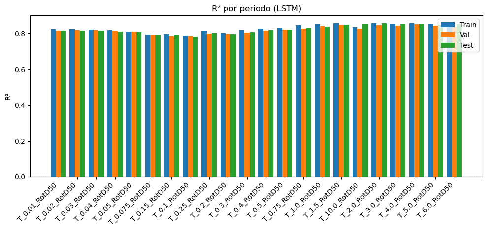
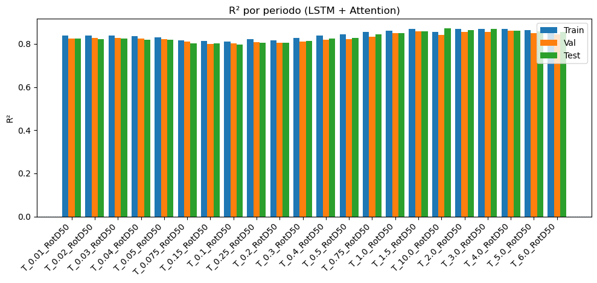
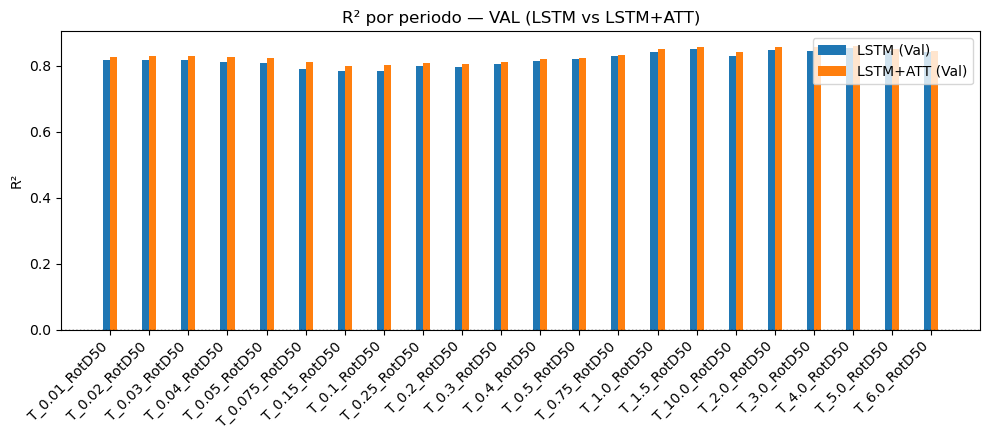
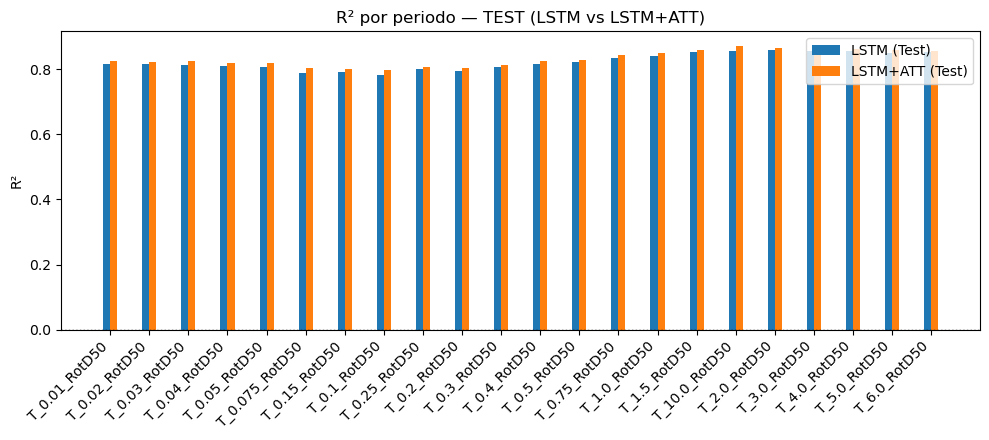
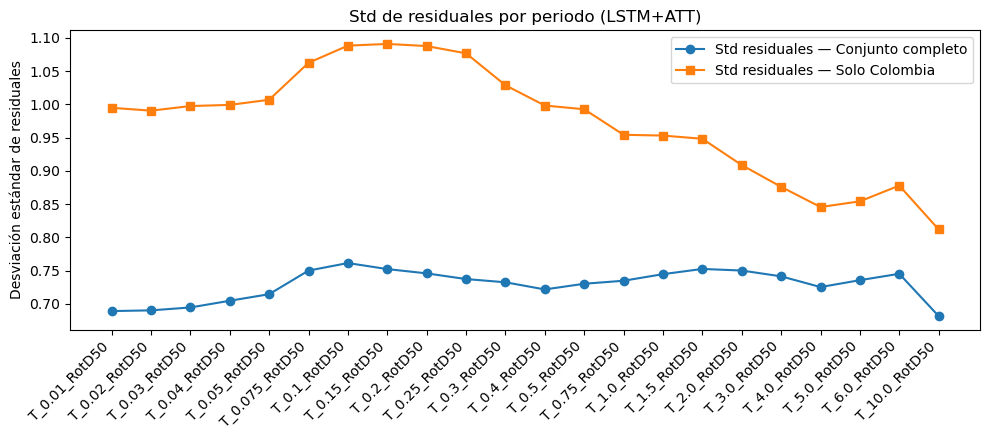
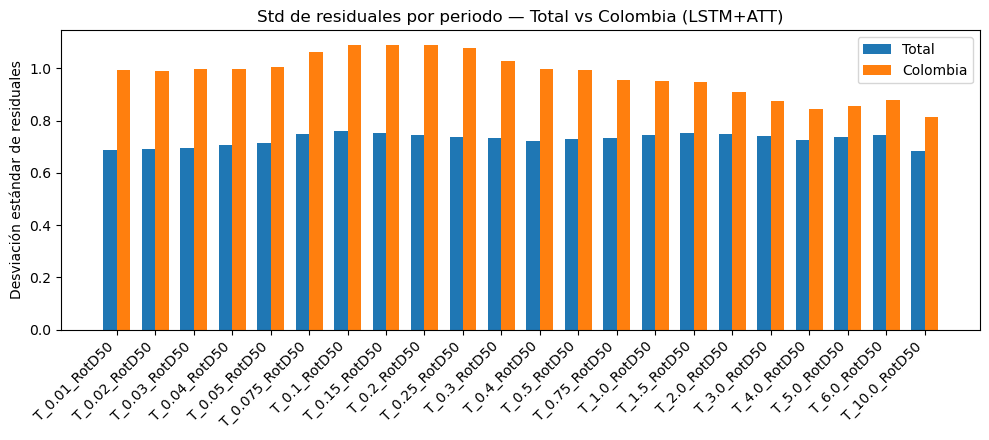
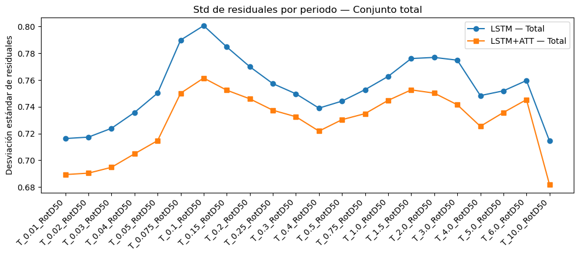
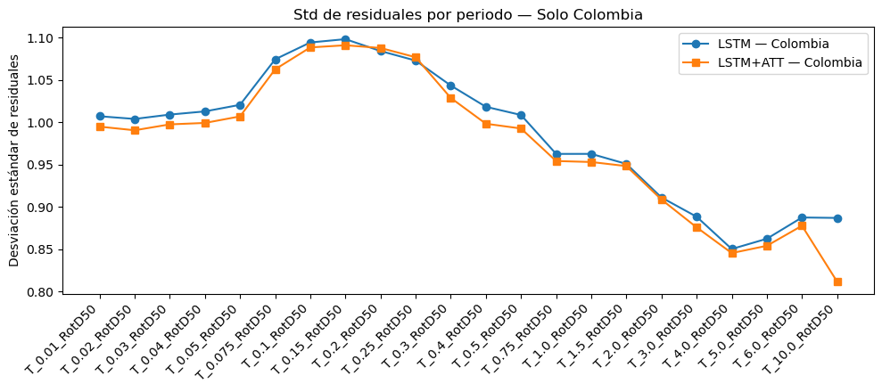
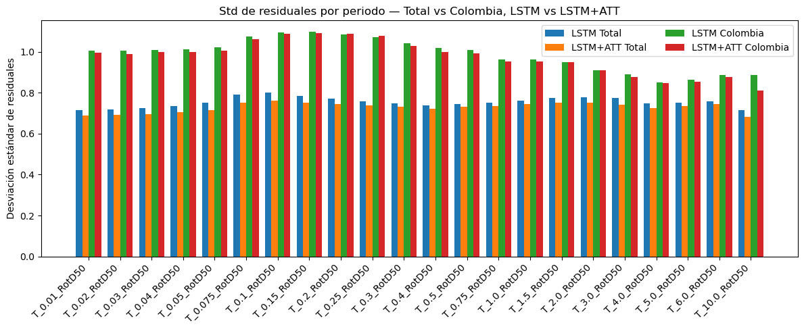

Modelo red neuronal LSTM + Attention.#
import warnings
warnings.filterwarnings('ignore')
import pandas as pd
import re
import matplotlib.pyplot as plt
import seaborn as sns
import numpy as np
Sa_Crustal = ['T_0.01_RotD50', 'T_0.02_RotD50', 'T_0.03_RotD50', 'T_0.04_RotD50',
'T_0.05_RotD50','T_0.075_RotD50','T_0.1_RotD50','T_0.15_RotD50','T_0.2_RotD50','T_0.25_RotD50','T_0.3_RotD50',
'T_0.4_RotD50','T_0.5_RotD50','T_0.75_RotD50','T_1.0_RotD50','T_1.5_RotD50','T_2.0_RotD50','T_3.0_RotD50',
'T_4.0_RotD50','T_5.0_RotD50','T_6.0_RotD50','T_10.0_RotD50']
df = pd.read_excel('C:/Users/elias/OneDrive/Desktop/MachineLearning/FinalProjectDL/Final_Project/Updated_NGA_West2_Flatfile_RotD50EDITADO.xlsx')
df = df[df['Vs30 (m/s) selected for analysis'] > 0]
df = df[df['Magnitude Type'] == 'Mw']
df.drop(columns=['Record Sequence Number','Earthquake Name',
'Magnitude Type','EpiD (km)','Joyner-Boore Dist. (km)',
'RmsD (km)','Rx','Vs30 (m/s) selected for analysis',
#'Tmax',
'Lowest Usable Freq - Ave. Component (Hz)',
'PGA (g)','PGV (cm/sec)','PGD (cm)'], inplace=True)
inputs = df.columns[0:9]
var = inputs.tolist() + Sa_Crustal
df_Col = pd.read_excel('C:/Users/elias/OneDrive/Desktop/MachineLearning/FinalProjectDL/Final_Project/CopiaDataBaseSGC.xlsx')
df_Col[Sa_Crustal]=df_Col[Sa_Crustal]/980
columnas_a_eliminar = [
"Record Sequence Number", "Station ID", "Station Code", "Magnitude type", "EQID", "Valor_T1.5",
#"Tmax",
#"Epicenter Latitude (deg; positive N)", "Epicenter Longitude (deg; positive E)",
#"Station Latitude (deg positive N)", "Station Longitude (deg positive E)",
"Topografía", "Geología",
"Nodal Plane 1 Rake Angle (deg)", "Nodal Plane 2 Rake Angle (deg)",
"Nodal Plane 2 Dip (deg)", "Nodal Plane 2 Strike (deg)",
"Rx_OpenQuake", "Ry0_OpenQuake", "Rjb_OpenQuake",
"Repi_OpenQuake",
# "Rhypo_OpenQuake",
"Station Elevation (m)",
#"Soil_Class",
"Nodal Plane 1 Strike (deg)", "Nodal Plane 1 Dip (deg)",
"Fault Plane (1; 2; X)", "Style-of-Faulting (S; R; N; U)",
"Tn",
'Record Sequence Number','EQID','Magnitude type',
'Tectonic environment (Crustal; Inslab; Interface; Stable; Deep; Volcanic; Oceanic_crust)'
]
df_Col = df_Col[df_Col['Tectonic environment (Crustal; Inslab; Interface; Stable; Deep; Volcanic; Oceanic_crust)']=='Crustal']
df_Col.drop(columns=columnas_a_eliminar, inplace=True)
df_Col = df_Col[df_Col['T_0.01_RotD50']>=1e-7]
df = df.rename(columns={"Hypocenter Latitude (deg)": "Seismic Latitude"})
df = df.rename(columns={"Hypocenter Longitude (deg)": "Seismic Longitude"})
df_Col = df_Col.rename(columns={"Epicenter Latitude (deg; positive N)": "Seismic Latitude"})
df_Col = df_Col.rename(columns={"Epicenter Longitude (deg; positive E)": "Seismic Longitude"})
df_Col = df_Col.rename(columns={"Station Latitude (deg positive N)": "Station Latitude"})
df_Col = df_Col.rename(columns={"Station Longitude (deg positive E)": "Station Longitude"})
inputs = df.columns[0:9]
inputs
Index(['Seismic Latitude', 'Seismic Longitude', 'Station Latitude',
'Station Longitude', 'Hypocenter Depth (km)', 'Magnitude',
'Rhypo_OpenQuake', 'Rrup_OpenQuake', 'Soil_Class'],
dtype='object')
var = inputs.tolist() + Sa_Crustal
df_Col=df_Col[var]
df_Col['origen'] = 'Colombia'
df['origen'] = 'NGAW2'
df_total = pd.concat([df, df_Col], ignore_index=True)
df_total
| Seismic Latitude | Seismic Longitude | Station Latitude | Station Longitude | Hypocenter Depth (km) | Magnitude | Rhypo_OpenQuake | Rrup_OpenQuake | Soil_Class | Tmax | ... | T_0.75_RotD50 | T_1.0_RotD50 | T_1.5_RotD50 | T_2.0_RotD50 | T_3.0_RotD50 | T_4.0_RotD50 | T_5.0_RotD50 | T_6.0_RotD50 | T_10.0_RotD50 | origen | |
|---|---|---|---|---|---|---|---|---|---|---|---|---|---|---|---|---|---|---|---|---|---|
| 0 | 46.6100 | -111.9600 | 46.5800 | -112.0300 | 6.0 | 6.0000 | 8.710000 | 2.860000 | 3 | 6.153846 | ... | 0.092829 | 0.101136 | 0.059109 | 0.035895 | 1.525704e-02 | 7.987177e-03 | 4.643577e-03 | 3.036607e-03 | NaN | NGAW2 |
| 1 | 40.4000 | -125.1000 | 40.5760 | -124.2630 | 10.0 | 5.8000 | 74.170000 | 71.570000 | 4 | 2.666667 | ... | 0.056946 | 0.035785 | 0.016157 | 0.009347 | 2.959554e-03 | NaN | NaN | NaN | NaN | NGAW2 |
| 2 | 40.3000 | -124.8000 | 40.5760 | -124.2630 | 10.0 | 5.5000 | 55.780000 | 53.580000 | 4 | 1.600000 | ... | 0.091499 | 0.093659 | 0.026785 | 0.013654 | NaN | NaN | NaN | NaN | NaN | NGAW2 |
| 3 | 32.7601 | -115.4162 | 32.7940 | -115.5490 | 8.8 | 6.9500 | 15.690000 | 6.090000 | 4 | 4.000000 | ... | 0.435350 | 0.351286 | 0.197357 | 0.215745 | 1.063604e-01 | 4.696507e-02 | NaN | NaN | NaN | NGAW2 |
| 4 | 40.2830 | -124.8000 | 40.5760 | -124.2630 | 10.0 | 5.8000 | 56.850000 | 53.770000 | 4 | 2.000000 | ... | 0.124190 | 0.085661 | 0.040947 | 0.019499 | NaN | NaN | NaN | NaN | NaN | NGAW2 |
| ... | ... | ... | ... | ... | ... | ... | ... | ... | ... | ... | ... | ... | ... | ... | ... | ... | ... | ... | ... | ... | ... |
| 17507 | 3.4400 | -74.1900 | 1.1890 | -77.3220 | 10.0 | 4.1000 | 428.905798 | 428.091130 | 5 | NaN | ... | 0.000002 | 0.000001 | 0.000001 | 0.000001 | 1.087456e-06 | 6.427327e-07 | 3.359714e-07 | 2.371388e-07 | 6.632653e-08 | Colombia |
| 17508 | 3.4300 | -74.2000 | 1.1890 | -77.3220 | 18.0 | 4.0000 | 427.631871 | 426.956629 | 5 | NaN | ... | 0.000002 | 0.000001 | 0.000001 | 0.000001 | 9.019724e-07 | 4.762469e-07 | 2.486122e-07 | 1.713980e-07 | 6.234694e-08 | Colombia |
| 17509 | 3.4100 | -74.1700 | 1.2097 | -77.2563 | 15.0 | 4.3000 | 421.640421 | 420.098899 | 5 | NaN | ... | 0.000013 | 0.000008 | 0.000003 | 0.000004 | 2.928746e-06 | 2.381339e-06 | 2.458191e-06 | 1.652310e-06 | 3.452092e-07 | Colombia |
| 17510 | 7.2700 | -78.6400 | 1.2097 | -77.2563 | 4.0 | 5.1000 | 691.759807 | 689.662530 | 5 | NaN | ... | 0.000003 | 0.000002 | 0.000002 | 0.000002 | 8.369194e-07 | 4.056827e-07 | 2.166969e-07 | 1.402816e-07 | 4.969388e-08 | Colombia |
| 17511 | 13.1600 | -81.0500 | 3.3721 | -76.5300 | 10.0 | 5.6321 | 1196.423818 | 1188.735771 | 5 | NaN | ... | 0.000003 | 0.000003 | 0.000002 | 0.000001 | 7.131480e-07 | 3.910684e-07 | 2.264020e-07 | 1.611959e-07 | 6.663265e-08 | Colombia |
17512 rows × 33 columns
df_total.drop(columns=['Seismic Latitude', 'Seismic Longitude', 'Station Latitude','Station Longitude'], inplace=True)
from sklearn.linear_model import LinearRegression
df_total = df_total[df_total['T_0.01_RotD50'] > 10e-6]
df_30_35 = df_total[(df_total["Magnitude"] >= 3.0) & (df_total["Magnitude"] < 3.5)]
df_35_40 = df_total[(df_total["Magnitude"] >= 3.5) & (df_total["Magnitude"] < 4.0)]
df_40_45 = df_total[(df_total["Magnitude"] >= 4.0) & (df_total["Magnitude"] < 4.5)]
df_45_50 = df_total[(df_total["Magnitude"] >= 4.5) & (df_total["Magnitude"] < 5.0)]
df_50_55 = df_total[(df_total["Magnitude"] >= 5.0) & (df_total["Magnitude"] < 5.5)]
df_55_60 = df_total[(df_total["Magnitude"] >= 5.5) & (df_total["Magnitude"] < 6.0)]
df_60_65 = df_total[(df_total["Magnitude"] >= 6.0) & (df_total["Magnitude"] < 6.5)]
df_65_70 = df_total[(df_total["Magnitude"] >= 6.5) & (df_total["Magnitude"] < 7.0)]
df_70_75 = df_total[(df_total["Magnitude"] >= 7.0) & (df_total["Magnitude"] < 7.5)]
df_75_80 = df_total[(df_total["Magnitude"] >= 7.5) & (df_total["Magnitude"] <= 8.0)]
import numpy as np
import matplotlib.pyplot as plt
from sklearn.linear_model import LinearRegression
# Definimos función para aplicar tu lógica
def analizar_bin(df, label, pga_min=1e-4, columna_x="Rhypo_OpenQuake", columna_y="T_0.01_RotD50"):
x = df[columna_x]
y = df[columna_y]
# Filtrar datos sin NA y aplicar log10
x_log = np.log10(x)
y_log = np.log10(y)
mask = (x_log.notna()) & (y_log.notna())
x_log = x_log[mask].values.reshape(-1, 1)
y_log = y_log[mask].values
if len(x_log) < 10: # evitar bins vacíos
print(f"Bin {label} sin suficientes datos.")
return None
# Modelo de regresión lineal (log-log)
modelo = LinearRegression()
modelo.fit(x_log, y_log)
# Línea de tendencia
x_pred = np.logspace(np.log10(x.min()), np.log10(1500), 1000)
x_pred_log = np.log10(x_pred).reshape(-1, 1)
y_pred_log = modelo.predict(x_pred_log)
# Desviación estándar de los residuos (hasta 20,000 km)
residuos = y_log - modelo.predict(x_log)
residuos_limite = residuos[x[mask].values <= 20000]
sigma = np.std(residuos_limite)
y_pred_log_2sigma = y_pred_log - 2 * sigma
# Calcular intersección con PGA mínimo
pga_min_log = np.log10(pga_min)
idx_interseccion = np.where(y_pred_log_2sigma <= pga_min_log)[0]
R_max = x_pred[idx_interseccion[0]] if len(idx_interseccion) > 0 else None
# --- Gráfico ---
plt.figure(figsize=(12, 7))
plt.scatter(x, y, alpha=0.3, label="Datos", color='gray')
plt.plot(x_pred, 10**y_pred_log, color='black', label="Línea Tendencia", linewidth=2)
plt.plot(x_pred, 10**y_pred_log_2sigma, color='red', label="LT - 2σ", linewidth=2)
plt.axhline(y=pga_min, color='pink', linestyle='--', label=f"PGA Mín = {pga_min:g}")
if R_max:
plt.axvline(x=R_max, color='red', linestyle='--', label=f"Rmax = {int(R_max)} km")
plt.xscale("log")
plt.yscale("log")
plt.xlabel("Rhypo (km)")
plt.ylabel("PGA (g)")
plt.title(f"Bin {label}: Filtrado con base en PGA Threshold")
plt.grid(True, which='both', linestyle='--', alpha=0.3)
plt.legend()
plt.tight_layout()
plt.show()
return R_max
# --- Diccionario con tus dataframes ---
bins_dict = {
"3.0-3.5": df_30_35,
"3.5-4.0": df_35_40,
"4.0-4.5": df_40_45,
"4.5-5.0": df_45_50,
"5.0-5.5": df_50_55,
"5.5-6.0": df_55_60,
"6.0-6.5": df_60_65,
"6.5-7.0": df_65_70,
"7.0-7.5": df_70_75,
"7.5-8.0": df_75_80
}
# --- Iterar sobre todos los bins ---
Rmax_results = {}
for label, df_bin in bins_dict.items():
Rmax_results[label] = analizar_bin(df_bin, label)
# Ver resultados
print("Resultados Rmax por bin:")
for label, rmax in Rmax_results.items():
print(f"{label}: {rmax}")


Resultados Rmax por bin:
3.0-3.5: 35.62906404860754
3.5-4.0: 42.79466013240592
4.0-4.5: 76.0450541153358
4.5-5.0: 118.97322286109743
5.0-5.5: 201.11636081673532
5.5-6.0: 311.2590138828386
6.0-6.5: 1242.5723936272595
6.5-7.0: 1023.9824377662434
7.0-7.5: None
7.5-8.0: None
# Filtrar cada bin con su respectivo Rmax
df30_35 = df_30_35[df_30_35['Rhypo_OpenQuake'] <= Rmax_results["3.0-3.5"]]
df35_40 = df_35_40[df_35_40['Rhypo_OpenQuake'] <= Rmax_results["3.5-4.0"]]
df40_45 = df_40_45[df_40_45['Rhypo_OpenQuake'] <= Rmax_results["4.0-4.5"]]
df45_50 = df_45_50[df_45_50['Rhypo_OpenQuake'] <= Rmax_results["4.5-5.0"]]
df50_55 = df_50_55[df_50_55['Rhypo_OpenQuake'] <= Rmax_results["5.0-5.5"]]
df55_60 = df_55_60[df_55_60['Rhypo_OpenQuake'] <= Rmax_results["5.5-6.0"]]
df60_65 = df_60_65[df_60_65['Rhypo_OpenQuake'] <= Rmax_results["6.0-6.5"]]
df65_70 = df_65_70[df_65_70['Rhypo_OpenQuake'] <= Rmax_results["6.5-7.0"]]
#df70_75 = df_70_75[df_70_75['Rhypo_OpenQuake'] <= Rmax_results["7.0-7.5"]]
#df75_80 = df_75_80[df_75_80['Rhypo_OpenQuake'] <= Rmax_results["7.5-8.0"]]
df70_75 = df_70_75
df75_80 = df_75_80
# Concatenar todos los bins ya filtrados
df_total2 = pd.concat(
[df30_35, df35_40, df40_45, df45_50, df50_55,
df55_60, df60_65, df65_70, df70_75, df75_80],
ignore_index=True
)
# Copiar y aplicar filtro final de PGA
df_total = df_total2.copy()
df_total = df_total[df_total['T_0.01_RotD50'] > 1e-4]
df_total
| Hypocenter Depth (km) | Magnitude | Rhypo_OpenQuake | Rrup_OpenQuake | Soil_Class | Tmax | T_0.01_RotD50 | T_0.02_RotD50 | T_0.03_RotD50 | T_0.04_RotD50 | ... | T_0.75_RotD50 | T_1.0_RotD50 | T_1.5_RotD50 | T_2.0_RotD50 | T_3.0_RotD50 | T_4.0_RotD50 | T_5.0_RotD50 | T_6.0_RotD50 | T_10.0_RotD50 | origen | |
|---|---|---|---|---|---|---|---|---|---|---|---|---|---|---|---|---|---|---|---|---|---|
| 0 | 7.213 | 3.4 | 12.75630 | 12.22 | 2 | 0.808081 | 0.001092 | 0.001078 | 0.001453 | 0.002399 | ... | 0.000467 | 0.000183 | NaN | NaN | NaN | NaN | NaN | NaN | NaN | NGAW2 |
| 1 | 7.213 | 3.4 | 27.33596 | 27.03 | 3 | 1.081081 | 0.001714 | 0.001696 | 0.001745 | 0.002034 | ... | 0.000513 | 0.000254 | 0.000067 | NaN | NaN | NaN | NaN | NaN | NaN | NGAW2 |
| 2 | 7.213 | 3.4 | 35.07003 | 34.85 | 3 | 1.081081 | 0.002577 | 0.002538 | 0.002716 | 0.003008 | ... | 0.000491 | 0.000322 | 0.000082 | NaN | NaN | NaN | NaN | NaN | NaN | NGAW2 |
| 3 | 7.213 | 3.4 | 20.55230 | 20.07 | 3 | 1.333333 | 0.004874 | 0.005332 | 0.006315 | 0.008871 | ... | 0.000329 | 0.000171 | 0.000060 | NaN | NaN | NaN | NaN | NaN | NaN | NGAW2 |
| 4 | 8.469 | 3.4 | 12.84512 | 12.51 | 3 | 1.666667 | 0.067464 | 0.071776 | 0.104458 | 0.115679 | ... | 0.001890 | 0.001022 | 0.000448 | 0.000245 | NaN | NaN | NaN | NaN | NaN | NGAW2 |
| ... | ... | ... | ... | ... | ... | ... | ... | ... | ... | ... | ... | ... | ... | ... | ... | ... | ... | ... | ... | ... | ... |
| 10241 | 10.040 | 7.9 | 609.00000 | 441.95 | 3 | 20.000000 | 0.011848 | 0.011885 | 0.011950 | 0.012048 | ... | 0.016969 | 0.013162 | 0.011378 | 0.012016 | 0.007713 | 0.007323 | 0.009168 | 0.011108 | 0.005309 | NGAW2 |
| 10242 | 10.040 | 7.9 | 537.99000 | 362.18 | 3 | 26.666667 | 0.013792 | 0.013822 | 0.013872 | 0.013959 | ... | 0.025694 | 0.023990 | 0.015413 | 0.018298 | 0.011543 | 0.008223 | 0.008980 | 0.008458 | 0.005573 | NGAW2 |
| 10243 | 10.040 | 7.9 | 540.10000 | 376.08 | 2 | 26.666667 | 0.011857 | 0.011864 | 0.011873 | 0.011891 | ... | 0.027657 | 0.025381 | 0.019319 | 0.020109 | 0.007606 | 0.005916 | 0.006102 | 0.008619 | 0.006396 | NGAW2 |
| 10244 | 10.040 | 7.9 | 556.05000 | 416.48 | 3 | 13.333333 | 0.011815 | 0.011839 | 0.011880 | 0.011948 | ... | 0.014408 | 0.019274 | 0.011439 | 0.008004 | 0.006273 | 0.004877 | 0.004101 | 0.006534 | 0.004158 | NGAW2 |
| 10245 | 10.040 | 7.9 | 586.39000 | 428.78 | 3 | 20.000000 | 0.016647 | 0.016672 | 0.016724 | 0.016814 | ... | 0.035856 | 0.024890 | 0.041314 | 0.026555 | 0.014955 | 0.014360 | 0.016018 | 0.014683 | 0.009733 | NGAW2 |
10239 rows × 29 columns
df_total.drop(columns=['Rhypo_OpenQuake'], inplace=True)
df_total[Sa_Crustal]=np.log(df_total[Sa_Crustal])
df_total["Rrup_OpenQuake"]=np.log(df_total["Rrup_OpenQuake"])
# 1) Detectar columnas de periodos
cols_T = [c for c in df_total.columns if re.match(r'^T_\d+(\.\d+)?_RotD50$', c)]
# 2) Extraer el valor del periodo de cada columna (float)
def col_to_T(c):
# de 'T_0.01_RotD50' -> 0.01
return float(c.split('_')[1])
periods = np.array([col_to_T(c) for c in cols_T]) # shape (nT,)
# 3) Construir máscara por-fila: True donde T > Tmax (invalidar)
Tmax = df_total['Tmax'].to_numpy().reshape(-1, 1) # shape (n,1)
mask = periods.reshape(1, -1) > Tmax # shape (n, nT)
# 4) Aplicar NaN solo en los inválidos (¡sin loops!)
df_total.loc[:, cols_T] = df_total.loc[:, cols_T].mask(mask)
Modelamiento#
import numpy as np
import pandas as pd
import tensorflow as tf
from tensorflow.keras import layers, Model, Input
from sklearn.model_selection import train_test_split
from sklearn.pipeline import Pipeline
from sklearn.preprocessing import StandardScaler, OneHotEncoder
from sklearn.compose import ColumnTransformer
WARNING:tensorflow:From c:\Users\elias\anaconda3\envs\ml_subject\lib\site-packages\keras\src\losses.py:2976: The name tf.losses.sparse_softmax_cross_entropy is deprecated. Please use tf.compat.v1.losses.sparse_softmax_cross_entropy instead.
import tensorflow as tf
from tensorflow.keras import layers, callbacks, optimizers, Sequential
def masked_mse(y_true, y_pred):
"""
MSE que ignora los NaN de y_true.
Promedia por muestra (solo sobre entradas válidas) y luego promedia el batch.
"""
# máscara: 1 donde y_true es válido, 0 donde es NaN
mask = tf.cast(~tf.math.is_nan(y_true), tf.float32)
# reemplaza NaN por 0 (no afecta porque se multiplica por mask)
y_true_f = tf.where(tf.math.is_nan(y_true), tf.zeros_like(y_true), y_true)
# error cuadrático por elemento y enmascarado
se = tf.square(y_pred - y_true_f) * mask
# ejes a reducir (todos menos el batch: 0)
reduce_axes = tf.range(1, tf.rank(y_true))
# suma de errores y conteo de válidos por muestra
se_sum = tf.reduce_sum(se, axis=reduce_axes)
n_valid = tf.reduce_sum(mask, axis=reduce_axes)
# MSE por muestra (evitando división por cero)
mse_per_sample = se_sum / (n_valid + 1e-8)
# promedio del batch
return tf.reduce_mean(mse_per_sample)
def masked_mae(y_true, y_pred):
mask = tf.cast(~tf.math.is_nan(y_true), tf.float32)
y_true_f = tf.where(tf.math.is_nan(y_true), tf.zeros_like(y_true), y_true)
ae = tf.abs(y_pred - y_true_f) * mask
reduce_axes = tf.range(1, tf.rank(y_true))
ae_sum = tf.reduce_sum(ae, axis=reduce_axes)
n_valid = tf.reduce_sum(mask, axis=reduce_axes)
mae_per_sample = ae_sum / (n_valid + 1e-8)
return tf.reduce_mean(mae_per_sample)
inputs = ['Magnitude', 'Rrup_OpenQuake', 'Hypocenter Depth (km)', 'Soil_Class','origen']
outputs = Sa_Crustal
num_features = ['Magnitude', 'Rrup_OpenQuake', 'Hypocenter Depth (km)']
cat_features = ['Soil_Class', 'origen']
df_total[cat_features] = df_total[cat_features].astype(str)
X = df_total[inputs]
y = df_total[Sa_Crustal]
X_train, X_tmp, y_train, y_tmp = train_test_split(
X, y, test_size=0.30, random_state=0, shuffle=True
)
X_val, X_test, y_val, y_test = train_test_split(
X_tmp, y_tmp, test_size=0.50, random_state=0, shuffle=True
)
num_pipe = Pipeline(steps=[
("scaler", StandardScaler(with_mean=True, with_std=True))
])
cat_pipe = Pipeline(steps=[
("ohe", OneHotEncoder(handle_unknown="ignore", sparse_output=False))
])
pre = ColumnTransformer(
transformers=[
("num", num_pipe, num_features),
("cat", cat_pipe, cat_features)
],
remainder="drop",
sparse_threshold=0.0
)
X_train_feats = pre.fit_transform(X_train)
X_val_feats = pre.transform(X_val)
X_test_feats = pre.transform(X_test)
X_train_feats
array([[ 0.19604934, 0.90089962, 1.22396476, ..., 1. ,
1. , 0. ],
[ 1.49961367, -0.33764404, -0.51547842, ..., 0. ,
0. , 1. ],
[-0.71324057, 0.29555981, 0.27693458, ..., 0. ,
0. , 1. ],
...,
[-0.65651422, 0.55415743, 8.39433608, ..., 0. ,
1. , 0. ],
[ 1.49961367, -2.49693573, -0.51547842, ..., 0. ,
0. , 1. ],
[-0.4058997 , 0.66551801, -0.61481995, ..., 0. ,
0. , 1. ]])
LSTM#
# Datos -> numpy
Xtr = np.asarray(X_train_feats, dtype="float32")
Xva = np.asarray(X_val_feats, dtype="float32")
Xte = np.asarray(X_test_feats, dtype="float32")
Ytr = np.asarray(y_train, dtype="float32")
Yva = np.asarray(y_val, dtype="float32")
Yte = np.asarray(y_test, dtype="float32")
if Ytr.ndim == 1: Ytr = Ytr.reshape(-1,1)
if Yva.ndim == 1: Yva = Yva.reshape(-1,1)
if Yte.ndim == 1: Yte = Yte.reshape(-1,1)
n_features = Xtr.shape[1]
nT = Ytr.shape[1]
# RNN input shape: (batch, timesteps, features) — tratamos cada columna como timestep
Xtr_rnn = Xtr.reshape((-1, n_features, 1))
Xva_rnn = Xva.reshape((-1, n_features, 1))
Xte_rnn = Xte.reshape((-1, n_features, 1))
tf.keras.utils.set_random_seed(42)
inp = Input(shape=(n_features, 1))
x = layers.Bidirectional(layers.LSTM(64, return_sequences=True))(inp)
x = layers.LSTM(64)(x)
x = layers.Dense(64, activation="relu")(x)
#x = layers.Dropout(0.15)(x)
out = layers.Dense(nT, activation=None)(x)
modelLSTM = Model(inp, out)
modelLSTM.compile(optimizer=optimizers.Adam(1e-3), loss=masked_mse)
es = callbacks.EarlyStopping(monitor="val_loss", patience=20, restore_best_weights=True)
rlr = callbacks.ReduceLROnPlateau(monitor="val_loss", factor=0.5, patience=8, min_lr=1e-6)
history = modelLSTM.fit(
Xtr_rnn, Ytr,
validation_data=(Xva_rnn, Yva),
epochs=400, batch_size=64,
callbacks=[es, rlr], verbose=1
)
print("Test loss:", modelLSTM.evaluate(Xte_rnn, Yte, verbose=0))
y_pred_test = modelLSTM.predict(Xte_rnn) # (n_samples, nT)
WARNING:tensorflow:From c:\Users\elias\anaconda3\envs\ml_subject\lib\site-packages\keras\src\backend.py:1398: The name tf.executing_eagerly_outside_functions is deprecated. Please use tf.compat.v1.executing_eagerly_outside_functions instead.
Epoch 1/400
WARNING:tensorflow:From c:\Users\elias\anaconda3\envs\ml_subject\lib\site-packages\keras\src\utils\tf_utils.py:492: The name tf.ragged.RaggedTensorValue is deprecated. Please use tf.compat.v1.ragged.RaggedTensorValue instead.
112/112 [==============================] - 6s 17ms/step - loss: 7.8777 - val_loss: 2.9218 - lr: 0.0010
Epoch 2/400
112/112 [==============================] - 1s 9ms/step - loss: 2.5336 - val_loss: 1.9187 - lr: 0.0010
Epoch 3/400
112/112 [==============================] - 1s 9ms/step - loss: 1.8624 - val_loss: 1.6212 - lr: 0.0010
Epoch 4/400
112/112 [==============================] - 1s 9ms/step - loss: 1.5509 - val_loss: 1.2438 - lr: 0.0010
Epoch 5/400
112/112 [==============================] - 1s 9ms/step - loss: 1.2444 - val_loss: 1.1136 - lr: 0.0010
Epoch 6/400
112/112 [==============================] - 1s 8ms/step - loss: 1.1490 - val_loss: 1.0083 - lr: 0.0010
Epoch 7/400
112/112 [==============================] - 1s 9ms/step - loss: 1.1652 - val_loss: 1.0748 - lr: 0.0010
Epoch 8/400
112/112 [==============================] - 1s 9ms/step - loss: 1.0614 - val_loss: 0.9308 - lr: 0.0010
Epoch 9/400
112/112 [==============================] - 1s 9ms/step - loss: 0.9730 - val_loss: 0.9392 - lr: 0.0010
Epoch 10/400
112/112 [==============================] - 1s 8ms/step - loss: 0.9120 - val_loss: 1.0023 - lr: 0.0010
Epoch 11/400
112/112 [==============================] - 1s 9ms/step - loss: 0.8530 - val_loss: 0.7736 - lr: 0.0010
Epoch 12/400
112/112 [==============================] - 1s 9ms/step - loss: 0.7945 - val_loss: 0.7361 - lr: 0.0010
Epoch 13/400
112/112 [==============================] - 1s 8ms/step - loss: 0.8020 - val_loss: 0.6798 - lr: 0.0010
Epoch 14/400
112/112 [==============================] - 1s 9ms/step - loss: 0.7493 - val_loss: 0.6881 - lr: 0.0010
Epoch 15/400
112/112 [==============================] - 1s 9ms/step - loss: 0.7816 - val_loss: 0.7292 - lr: 0.0010
Epoch 16/400
112/112 [==============================] - 1s 9ms/step - loss: 0.7832 - val_loss: 0.8773 - lr: 0.0010
Epoch 17/400
112/112 [==============================] - 1s 9ms/step - loss: 0.8031 - val_loss: 0.8152 - lr: 0.0010
Epoch 18/400
112/112 [==============================] - 1s 9ms/step - loss: 0.7256 - val_loss: 0.8824 - lr: 0.0010
Epoch 19/400
112/112 [==============================] - 1s 8ms/step - loss: 0.7228 - val_loss: 0.7602 - lr: 0.0010
Epoch 20/400
112/112 [==============================] - 1s 8ms/step - loss: 0.7080 - val_loss: 0.6805 - lr: 0.0010
Epoch 21/400
112/112 [==============================] - 1s 9ms/step - loss: 0.6945 - val_loss: 0.7060 - lr: 0.0010
Epoch 22/400
112/112 [==============================] - 1s 8ms/step - loss: 0.6545 - val_loss: 0.6324 - lr: 5.0000e-04
Epoch 23/400
112/112 [==============================] - 1s 8ms/step - loss: 0.6518 - val_loss: 0.6353 - lr: 5.0000e-04
Epoch 24/400
112/112 [==============================] - 1s 8ms/step - loss: 0.6542 - val_loss: 0.6536 - lr: 5.0000e-04
Epoch 25/400
112/112 [==============================] - 1s 9ms/step - loss: 0.6518 - val_loss: 0.6420 - lr: 5.0000e-04
Epoch 26/400
112/112 [==============================] - 1s 8ms/step - loss: 0.6694 - val_loss: 0.6513 - lr: 5.0000e-04
Epoch 27/400
112/112 [==============================] - 1s 8ms/step - loss: 0.6477 - val_loss: 0.6381 - lr: 5.0000e-04
Epoch 28/400
112/112 [==============================] - 1s 9ms/step - loss: 0.6548 - val_loss: 0.6724 - lr: 5.0000e-04
Epoch 29/400
112/112 [==============================] - 1s 8ms/step - loss: 0.6765 - val_loss: 0.6841 - lr: 5.0000e-04
Epoch 30/400
112/112 [==============================] - 1s 8ms/step - loss: 0.6594 - val_loss: 0.6433 - lr: 5.0000e-04
Epoch 31/400
112/112 [==============================] - 1s 8ms/step - loss: 0.6267 - val_loss: 0.6235 - lr: 2.5000e-04
Epoch 32/400
112/112 [==============================] - 1s 9ms/step - loss: 0.6221 - val_loss: 0.6144 - lr: 2.5000e-04
Epoch 33/400
112/112 [==============================] - 1s 8ms/step - loss: 0.6191 - val_loss: 0.6361 - lr: 2.5000e-04
Epoch 34/400
112/112 [==============================] - 1s 9ms/step - loss: 0.6218 - val_loss: 0.6166 - lr: 2.5000e-04
Epoch 35/400
112/112 [==============================] - 1s 8ms/step - loss: 0.6183 - val_loss: 0.6251 - lr: 2.5000e-04
Epoch 36/400
112/112 [==============================] - 1s 8ms/step - loss: 0.6220 - val_loss: 0.6353 - lr: 2.5000e-04
Epoch 37/400
112/112 [==============================] - 1s 8ms/step - loss: 0.6288 - val_loss: 0.6171 - lr: 2.5000e-04
Epoch 38/400
112/112 [==============================] - 1s 8ms/step - loss: 0.6247 - val_loss: 0.6305 - lr: 2.5000e-04
Epoch 39/400
112/112 [==============================] - 1s 8ms/step - loss: 0.6309 - val_loss: 0.7946 - lr: 2.5000e-04
Epoch 40/400
112/112 [==============================] - 1s 8ms/step - loss: 0.6292 - val_loss: 0.6208 - lr: 2.5000e-04
Epoch 41/400
112/112 [==============================] - 1s 9ms/step - loss: 0.6083 - val_loss: 0.6081 - lr: 1.2500e-04
Epoch 42/400
112/112 [==============================] - 1s 9ms/step - loss: 0.6170 - val_loss: 0.6519 - lr: 1.2500e-04
Epoch 43/400
112/112 [==============================] - 1s 8ms/step - loss: 0.6096 - val_loss: 0.6124 - lr: 1.2500e-04
Epoch 44/400
112/112 [==============================] - 1s 9ms/step - loss: 0.6085 - val_loss: 0.6111 - lr: 1.2500e-04
Epoch 45/400
112/112 [==============================] - 1s 9ms/step - loss: 0.6155 - val_loss: 0.6150 - lr: 1.2500e-04
Epoch 46/400
112/112 [==============================] - 1s 9ms/step - loss: 0.6125 - val_loss: 0.6125 - lr: 1.2500e-04
Epoch 47/400
112/112 [==============================] - 1s 9ms/step - loss: 0.6108 - val_loss: 0.6056 - lr: 1.2500e-04
Epoch 48/400
112/112 [==============================] - 1s 9ms/step - loss: 0.6109 - val_loss: 0.6056 - lr: 1.2500e-04
Epoch 49/400
112/112 [==============================] - 1s 9ms/step - loss: 0.6141 - val_loss: 0.6088 - lr: 1.2500e-04
Epoch 50/400
112/112 [==============================] - 1s 8ms/step - loss: 0.6089 - val_loss: 0.6170 - lr: 1.2500e-04
Epoch 51/400
112/112 [==============================] - 1s 9ms/step - loss: 0.6124 - val_loss: 0.6098 - lr: 1.2500e-04
Epoch 52/400
112/112 [==============================] - 1s 9ms/step - loss: 0.6048 - val_loss: 0.6072 - lr: 1.2500e-04
Epoch 53/400
112/112 [==============================] - 1s 9ms/step - loss: 0.6075 - val_loss: 0.6014 - lr: 1.2500e-04
Epoch 54/400
112/112 [==============================] - 1s 10ms/step - loss: 0.6062 - val_loss: 0.6148 - lr: 1.2500e-04
Epoch 55/400
112/112 [==============================] - 1s 10ms/step - loss: 0.6096 - val_loss: 0.6097 - lr: 1.2500e-04
Epoch 56/400
112/112 [==============================] - 1s 9ms/step - loss: 0.6061 - val_loss: 0.6133 - lr: 1.2500e-04
Epoch 57/400
112/112 [==============================] - 1s 9ms/step - loss: 0.6097 - val_loss: 0.6077 - lr: 1.2500e-04
Epoch 58/400
112/112 [==============================] - 1s 10ms/step - loss: 0.6051 - val_loss: 0.5993 - lr: 1.2500e-04
Epoch 59/400
112/112 [==============================] - 1s 9ms/step - loss: 0.6067 - val_loss: 0.6673 - lr: 1.2500e-04
Epoch 60/400
112/112 [==============================] - 1s 10ms/step - loss: 0.6075 - val_loss: 0.6122 - lr: 1.2500e-04
Epoch 61/400
112/112 [==============================] - 1s 9ms/step - loss: 0.6007 - val_loss: 0.6057 - lr: 1.2500e-04
Epoch 62/400
112/112 [==============================] - 1s 10ms/step - loss: 0.6053 - val_loss: 0.6054 - lr: 1.2500e-04
Epoch 63/400
112/112 [==============================] - 1s 10ms/step - loss: 0.5997 - val_loss: 0.6018 - lr: 1.2500e-04
Epoch 64/400
112/112 [==============================] - 1s 9ms/step - loss: 0.6033 - val_loss: 0.6286 - lr: 1.2500e-04
Epoch 65/400
112/112 [==============================] - 1s 9ms/step - loss: 0.6000 - val_loss: 0.5977 - lr: 1.2500e-04
Epoch 66/400
112/112 [==============================] - 1s 10ms/step - loss: 0.6026 - val_loss: 0.6170 - lr: 1.2500e-04
Epoch 67/400
112/112 [==============================] - 1s 10ms/step - loss: 0.6029 - val_loss: 0.6005 - lr: 1.2500e-04
Epoch 68/400
112/112 [==============================] - 1s 9ms/step - loss: 0.6041 - val_loss: 0.6028 - lr: 1.2500e-04
Epoch 69/400
112/112 [==============================] - 1s 9ms/step - loss: 0.5993 - val_loss: 0.6018 - lr: 1.2500e-04
Epoch 70/400
112/112 [==============================] - 1s 9ms/step - loss: 0.6039 - val_loss: 0.5945 - lr: 1.2500e-04
Epoch 71/400
112/112 [==============================] - 1s 10ms/step - loss: 0.6018 - val_loss: 0.5974 - lr: 1.2500e-04
Epoch 72/400
112/112 [==============================] - 1s 10ms/step - loss: 0.6096 - val_loss: 0.6008 - lr: 1.2500e-04
Epoch 73/400
112/112 [==============================] - 1s 10ms/step - loss: 0.6028 - val_loss: 0.6005 - lr: 1.2500e-04
Epoch 74/400
112/112 [==============================] - 1s 11ms/step - loss: 0.6011 - val_loss: 0.6060 - lr: 1.2500e-04
Epoch 75/400
112/112 [==============================] - 1s 10ms/step - loss: 0.5977 - val_loss: 0.6112 - lr: 1.2500e-04
Epoch 76/400
112/112 [==============================] - 1s 10ms/step - loss: 0.6069 - val_loss: 0.6213 - lr: 1.2500e-04
Epoch 77/400
112/112 [==============================] - 1s 10ms/step - loss: 0.5992 - val_loss: 0.6087 - lr: 1.2500e-04
Epoch 78/400
112/112 [==============================] - 1s 9ms/step - loss: 0.5977 - val_loss: 0.5957 - lr: 1.2500e-04
Epoch 79/400
112/112 [==============================] - 1s 9ms/step - loss: 0.5921 - val_loss: 0.6036 - lr: 6.2500e-05
Epoch 80/400
112/112 [==============================] - 1s 9ms/step - loss: 0.5932 - val_loss: 0.5927 - lr: 6.2500e-05
Epoch 81/400
112/112 [==============================] - 1s 9ms/step - loss: 0.5903 - val_loss: 0.6068 - lr: 6.2500e-05
Epoch 82/400
112/112 [==============================] - 1s 9ms/step - loss: 0.5929 - val_loss: 0.5919 - lr: 6.2500e-05
Epoch 83/400
112/112 [==============================] - 1s 9ms/step - loss: 0.5957 - val_loss: 0.5929 - lr: 6.2500e-05
Epoch 84/400
112/112 [==============================] - 1s 9ms/step - loss: 0.5902 - val_loss: 0.6031 - lr: 6.2500e-05
Epoch 85/400
112/112 [==============================] - 1s 9ms/step - loss: 0.5910 - val_loss: 0.5901 - lr: 6.2500e-05
Epoch 86/400
112/112 [==============================] - 1s 9ms/step - loss: 0.5922 - val_loss: 0.5904 - lr: 6.2500e-05
Epoch 87/400
112/112 [==============================] - 1s 8ms/step - loss: 0.5893 - val_loss: 0.5942 - lr: 6.2500e-05
Epoch 88/400
112/112 [==============================] - 1s 8ms/step - loss: 0.5900 - val_loss: 0.5906 - lr: 6.2500e-05
Epoch 89/400
112/112 [==============================] - 1s 8ms/step - loss: 0.5940 - val_loss: 0.5919 - lr: 6.2500e-05
Epoch 90/400
112/112 [==============================] - 1s 8ms/step - loss: 0.5898 - val_loss: 0.5904 - lr: 6.2500e-05
Epoch 91/400
112/112 [==============================] - 1s 8ms/step - loss: 0.5923 - val_loss: 0.6083 - lr: 6.2500e-05
Epoch 92/400
112/112 [==============================] - 1s 8ms/step - loss: 0.5945 - val_loss: 0.5944 - lr: 6.2500e-05
Epoch 93/400
112/112 [==============================] - 1s 8ms/step - loss: 0.5872 - val_loss: 0.5900 - lr: 6.2500e-05
Epoch 94/400
112/112 [==============================] - 1s 8ms/step - loss: 0.5902 - val_loss: 0.5928 - lr: 6.2500e-05
Epoch 95/400
112/112 [==============================] - 1s 8ms/step - loss: 0.5889 - val_loss: 0.5924 - lr: 6.2500e-05
Epoch 96/400
112/112 [==============================] - 1s 9ms/step - loss: 0.5919 - val_loss: 0.5906 - lr: 6.2500e-05
Epoch 97/400
112/112 [==============================] - 1s 8ms/step - loss: 0.5894 - val_loss: 0.5879 - lr: 6.2500e-05
Epoch 98/400
112/112 [==============================] - 1s 9ms/step - loss: 0.5882 - val_loss: 0.6037 - lr: 6.2500e-05
Epoch 99/400
112/112 [==============================] - 1s 9ms/step - loss: 0.5888 - val_loss: 0.5955 - lr: 6.2500e-05
Epoch 100/400
112/112 [==============================] - 1s 9ms/step - loss: 0.5856 - val_loss: 0.5890 - lr: 6.2500e-05
Epoch 101/400
112/112 [==============================] - 1s 9ms/step - loss: 0.5925 - val_loss: 0.6010 - lr: 6.2500e-05
Epoch 102/400
112/112 [==============================] - 1s 9ms/step - loss: 0.5890 - val_loss: 0.5927 - lr: 6.2500e-05
Epoch 103/400
112/112 [==============================] - 1s 9ms/step - loss: 0.5875 - val_loss: 0.5940 - lr: 6.2500e-05
Epoch 104/400
112/112 [==============================] - 1s 9ms/step - loss: 0.5875 - val_loss: 0.5934 - lr: 6.2500e-05
Epoch 105/400
112/112 [==============================] - 1s 9ms/step - loss: 0.5868 - val_loss: 0.5944 - lr: 6.2500e-05
Epoch 106/400
112/112 [==============================] - 1s 9ms/step - loss: 0.5839 - val_loss: 0.5867 - lr: 3.1250e-05
Epoch 107/400
112/112 [==============================] - 1s 9ms/step - loss: 0.5860 - val_loss: 0.5990 - lr: 3.1250e-05
Epoch 108/400
112/112 [==============================] - 1s 9ms/step - loss: 0.5844 - val_loss: 0.5954 - lr: 3.1250e-05
Epoch 109/400
112/112 [==============================] - 1s 9ms/step - loss: 0.5842 - val_loss: 0.5861 - lr: 3.1250e-05
Epoch 110/400
112/112 [==============================] - 1s 8ms/step - loss: 0.5834 - val_loss: 0.5844 - lr: 3.1250e-05
Epoch 111/400
112/112 [==============================] - 1s 8ms/step - loss: 0.5822 - val_loss: 0.5878 - lr: 3.1250e-05
Epoch 112/400
112/112 [==============================] - 1s 9ms/step - loss: 0.5826 - val_loss: 0.5970 - lr: 3.1250e-05
Epoch 113/400
112/112 [==============================] - 1s 8ms/step - loss: 0.5844 - val_loss: 0.5871 - lr: 3.1250e-05
Epoch 114/400
112/112 [==============================] - 1s 9ms/step - loss: 0.5830 - val_loss: 0.5887 - lr: 3.1250e-05
Epoch 115/400
112/112 [==============================] - 1s 9ms/step - loss: 0.5833 - val_loss: 0.5863 - lr: 3.1250e-05
Epoch 116/400
112/112 [==============================] - 1s 9ms/step - loss: 0.5825 - val_loss: 0.5896 - lr: 3.1250e-05
Epoch 117/400
112/112 [==============================] - 1s 8ms/step - loss: 0.5822 - val_loss: 0.5896 - lr: 3.1250e-05
Epoch 118/400
112/112 [==============================] - 1s 9ms/step - loss: 0.5824 - val_loss: 0.5869 - lr: 3.1250e-05
Epoch 119/400
112/112 [==============================] - 1s 9ms/step - loss: 0.5811 - val_loss: 0.5883 - lr: 1.5625e-05
Epoch 120/400
112/112 [==============================] - 1s 9ms/step - loss: 0.5831 - val_loss: 0.5859 - lr: 1.5625e-05
Epoch 121/400
112/112 [==============================] - 1s 8ms/step - loss: 0.5797 - val_loss: 0.5844 - lr: 1.5625e-05
Epoch 122/400
112/112 [==============================] - 1s 8ms/step - loss: 0.5809 - val_loss: 0.5841 - lr: 1.5625e-05
Epoch 123/400
112/112 [==============================] - 1s 9ms/step - loss: 0.5803 - val_loss: 0.5868 - lr: 1.5625e-05
Epoch 124/400
112/112 [==============================] - 1s 9ms/step - loss: 0.5800 - val_loss: 0.5857 - lr: 1.5625e-05
Epoch 125/400
112/112 [==============================] - 2s 19ms/step - loss: 0.5812 - val_loss: 0.5860 - lr: 1.5625e-05
Epoch 126/400
112/112 [==============================] - 2s 19ms/step - loss: 0.5798 - val_loss: 0.5885 - lr: 1.5625e-05
Epoch 127/400
112/112 [==============================] - 2s 19ms/step - loss: 0.5797 - val_loss: 0.5880 - lr: 1.5625e-05
Epoch 128/400
112/112 [==============================] - 2s 18ms/step - loss: 0.5804 - val_loss: 0.5874 - lr: 1.5625e-05
Epoch 129/400
112/112 [==============================] - 2s 19ms/step - loss: 0.5797 - val_loss: 0.5868 - lr: 1.5625e-05
Epoch 130/400
112/112 [==============================] - 2s 18ms/step - loss: 0.5796 - val_loss: 0.5834 - lr: 1.5625e-05
Epoch 131/400
112/112 [==============================] - 2s 19ms/step - loss: 0.5802 - val_loss: 0.5845 - lr: 1.5625e-05
Epoch 132/400
112/112 [==============================] - 2s 17ms/step - loss: 0.5799 - val_loss: 0.5839 - lr: 1.5625e-05
Epoch 133/400
112/112 [==============================] - 2s 18ms/step - loss: 0.5802 - val_loss: 0.5843 - lr: 1.5625e-05
Epoch 134/400
112/112 [==============================] - 2s 19ms/step - loss: 0.5795 - val_loss: 0.5846 - lr: 1.5625e-05
Epoch 135/400
112/112 [==============================] - 2s 17ms/step - loss: 0.5803 - val_loss: 0.5854 - lr: 1.5625e-05
Epoch 136/400
112/112 [==============================] - 2s 19ms/step - loss: 0.5799 - val_loss: 0.5831 - lr: 1.5625e-05
Epoch 137/400
112/112 [==============================] - 2s 19ms/step - loss: 0.5801 - val_loss: 0.5845 - lr: 1.5625e-05
Epoch 138/400
112/112 [==============================] - 1s 11ms/step - loss: 0.5790 - val_loss: 0.5896 - lr: 1.5625e-05
Epoch 139/400
112/112 [==============================] - 1s 9ms/step - loss: 0.5799 - val_loss: 0.5851 - lr: 1.5625e-05
Epoch 140/400
112/112 [==============================] - 1s 10ms/step - loss: 0.5790 - val_loss: 0.5860 - lr: 1.5625e-05
Epoch 141/400
112/112 [==============================] - 1s 9ms/step - loss: 0.5806 - val_loss: 0.5842 - lr: 1.5625e-05
Epoch 142/400
112/112 [==============================] - 1s 9ms/step - loss: 0.5798 - val_loss: 0.5845 - lr: 1.5625e-05
Epoch 143/400
112/112 [==============================] - 1s 9ms/step - loss: 0.5803 - val_loss: 0.5860 - lr: 1.5625e-05
Epoch 144/400
112/112 [==============================] - 1s 9ms/step - loss: 0.5795 - val_loss: 0.5849 - lr: 1.5625e-05
Epoch 145/400
112/112 [==============================] - 1s 9ms/step - loss: 0.5786 - val_loss: 0.5829 - lr: 7.8125e-06
Epoch 146/400
112/112 [==============================] - 1s 10ms/step - loss: 0.5777 - val_loss: 0.5827 - lr: 7.8125e-06
Epoch 147/400
112/112 [==============================] - 1s 9ms/step - loss: 0.5787 - val_loss: 0.5830 - lr: 7.8125e-06
Epoch 148/400
112/112 [==============================] - 1s 9ms/step - loss: 0.5781 - val_loss: 0.5838 - lr: 7.8125e-06
Epoch 149/400
112/112 [==============================] - 1s 10ms/step - loss: 0.5784 - val_loss: 0.5827 - lr: 7.8125e-06
Epoch 150/400
112/112 [==============================] - 1s 9ms/step - loss: 0.5780 - val_loss: 0.5832 - lr: 7.8125e-06
Epoch 151/400
112/112 [==============================] - 1s 9ms/step - loss: 0.5775 - val_loss: 0.5867 - lr: 7.8125e-06
Epoch 152/400
112/112 [==============================] - 1s 10ms/step - loss: 0.5777 - val_loss: 0.5834 - lr: 7.8125e-06
Epoch 153/400
112/112 [==============================] - 1s 9ms/step - loss: 0.5776 - val_loss: 0.5840 - lr: 7.8125e-06
Epoch 154/400
112/112 [==============================] - 1s 9ms/step - loss: 0.5780 - val_loss: 0.5829 - lr: 7.8125e-06
Epoch 155/400
112/112 [==============================] - 1s 10ms/step - loss: 0.5778 - val_loss: 0.5827 - lr: 3.9063e-06
Epoch 156/400
112/112 [==============================] - 1s 11ms/step - loss: 0.5771 - val_loss: 0.5823 - lr: 3.9063e-06
Epoch 157/400
112/112 [==============================] - 1s 11ms/step - loss: 0.5777 - val_loss: 0.5824 - lr: 3.9063e-06
Epoch 158/400
112/112 [==============================] - 1s 10ms/step - loss: 0.5770 - val_loss: 0.5831 - lr: 3.9063e-06
Epoch 159/400
112/112 [==============================] - 1s 10ms/step - loss: 0.5774 - val_loss: 0.5829 - lr: 3.9063e-06
Epoch 160/400
112/112 [==============================] - 1s 10ms/step - loss: 0.5771 - val_loss: 0.5825 - lr: 3.9063e-06
Epoch 161/400
112/112 [==============================] - 1s 10ms/step - loss: 0.5771 - val_loss: 0.5829 - lr: 3.9063e-06
Epoch 162/400
112/112 [==============================] - 1s 11ms/step - loss: 0.5773 - val_loss: 0.5823 - lr: 3.9063e-06
Epoch 163/400
112/112 [==============================] - 1s 10ms/step - loss: 0.5771 - val_loss: 0.5825 - lr: 3.9063e-06
Epoch 164/400
112/112 [==============================] - 1s 9ms/step - loss: 0.5769 - val_loss: 0.5825 - lr: 3.9063e-06
Epoch 165/400
112/112 [==============================] - 1s 9ms/step - loss: 0.5770 - val_loss: 0.5834 - lr: 1.9531e-06
Epoch 166/400
112/112 [==============================] - 1s 9ms/step - loss: 0.5767 - val_loss: 0.5824 - lr: 1.9531e-06
Epoch 167/400
112/112 [==============================] - 1s 9ms/step - loss: 0.5769 - val_loss: 0.5823 - lr: 1.9531e-06
Epoch 168/400
112/112 [==============================] - 1s 9ms/step - loss: 0.5768 - val_loss: 0.5836 - lr: 1.9531e-06
Epoch 169/400
112/112 [==============================] - 1s 9ms/step - loss: 0.5770 - val_loss: 0.5826 - lr: 1.9531e-06
Epoch 170/400
112/112 [==============================] - 1s 9ms/step - loss: 0.5767 - val_loss: 0.5834 - lr: 1.9531e-06
Epoch 171/400
112/112 [==============================] - 1s 9ms/step - loss: 0.5767 - val_loss: 0.5824 - lr: 1.9531e-06
Epoch 172/400
112/112 [==============================] - 1s 9ms/step - loss: 0.5769 - val_loss: 0.5826 - lr: 1.9531e-06
Epoch 173/400
112/112 [==============================] - 1s 9ms/step - loss: 0.5766 - val_loss: 0.5827 - lr: 1.0000e-06
Epoch 174/400
112/112 [==============================] - 1s 9ms/step - loss: 0.5768 - val_loss: 0.5830 - lr: 1.0000e-06
Epoch 175/400
112/112 [==============================] - 1s 9ms/step - loss: 0.5767 - val_loss: 0.5831 - lr: 1.0000e-06
Epoch 176/400
112/112 [==============================] - 1s 9ms/step - loss: 0.5767 - val_loss: 0.5827 - lr: 1.0000e-06
Epoch 177/400
112/112 [==============================] - 1s 9ms/step - loss: 0.5767 - val_loss: 0.5822 - lr: 1.0000e-06
Epoch 178/400
112/112 [==============================] - 1s 9ms/step - loss: 0.5767 - val_loss: 0.5829 - lr: 1.0000e-06
Epoch 179/400
112/112 [==============================] - 1s 10ms/step - loss: 0.5767 - val_loss: 0.5825 - lr: 1.0000e-06
Epoch 180/400
112/112 [==============================] - 1s 9ms/step - loss: 0.5767 - val_loss: 0.5827 - lr: 1.0000e-06
Epoch 181/400
112/112 [==============================] - 1s 9ms/step - loss: 0.5767 - val_loss: 0.5830 - lr: 1.0000e-06
Epoch 182/400
112/112 [==============================] - 1s 9ms/step - loss: 0.5767 - val_loss: 0.5831 - lr: 1.0000e-06
Epoch 183/400
112/112 [==============================] - 1s 9ms/step - loss: 0.5767 - val_loss: 0.5825 - lr: 1.0000e-06
Epoch 184/400
112/112 [==============================] - 1s 9ms/step - loss: 0.5766 - val_loss: 0.5828 - lr: 1.0000e-06
Epoch 185/400
112/112 [==============================] - 1s 9ms/step - loss: 0.5766 - val_loss: 0.5832 - lr: 1.0000e-06
Epoch 186/400
112/112 [==============================] - 1s 9ms/step - loss: 0.5766 - val_loss: 0.5831 - lr: 1.0000e-06
Epoch 187/400
112/112 [==============================] - 1s 9ms/step - loss: 0.5766 - val_loss: 0.5825 - lr: 1.0000e-06
Epoch 188/400
112/112 [==============================] - 1s 9ms/step - loss: 0.5766 - val_loss: 0.5833 - lr: 1.0000e-06
Epoch 189/400
112/112 [==============================] - 1s 9ms/step - loss: 0.5767 - val_loss: 0.5828 - lr: 1.0000e-06
Epoch 190/400
112/112 [==============================] - 1s 9ms/step - loss: 0.5766 - val_loss: 0.5826 - lr: 1.0000e-06
Epoch 191/400
112/112 [==============================] - 1s 9ms/step - loss: 0.5766 - val_loss: 0.5830 - lr: 1.0000e-06
Epoch 192/400
112/112 [==============================] - 1s 9ms/step - loss: 0.5767 - val_loss: 0.5832 - lr: 1.0000e-06
Epoch 193/400
112/112 [==============================] - 1s 9ms/step - loss: 0.5766 - val_loss: 0.5828 - lr: 1.0000e-06
Epoch 194/400
112/112 [==============================] - 1s 9ms/step - loss: 0.5765 - val_loss: 0.5824 - lr: 1.0000e-06
Epoch 195/400
112/112 [==============================] - 1s 9ms/step - loss: 0.5766 - val_loss: 0.5825 - lr: 1.0000e-06
Epoch 196/400
112/112 [==============================] - 1s 9ms/step - loss: 0.5766 - val_loss: 0.5827 - lr: 1.0000e-06
Epoch 197/400
112/112 [==============================] - 1s 9ms/step - loss: 0.5767 - val_loss: 0.5824 - lr: 1.0000e-06
Test loss: 0.582625687122345
48/48 [==============================] - 1s 3ms/step
# ====== BLOQUE 2: Métricas por periodo (TEST) ======
# Nombres de salidas: usa tu lista de columnas objetivo
y_names = list(Sa_Crustal) if 'Sa_Crustal' in globals() else [f"Y_{j}" for j in range(Yte.shape[1])]
if len(y_names) != Yte.shape[1]: y_names = [f"Y_{j}" for j in range(Yte.shape[1])]
# Si entrenaste en log(Sa) y quieres métricas en escala original, activa:
EXP_BACKTRANS = False
Y_te_eval = np.exp(Yte) if EXP_BACKTRANS else Yte
Yp_te_eval = np.exp(y_pred_test) if EXP_BACKTRANS else y_pred_test
rows_test = []
for j, name in enumerate(y_names):
y_t = Y_te_eval[:, j]; y_p = Yp_te_eval[:, j]
m = np.isfinite(y_t) & np.isfinite(y_p)
if m.sum() == 0:
rows_test.append({"Y": name, "RMSE": np.nan, "MSE": np.nan, "MAE": np.nan, "MAPE_%": np.nan, "R2": np.nan})
continue
err = y_p[m] - y_t[m]
mse = np.mean(err**2)
rmse = np.sqrt(mse)
mae = np.mean(np.abs(err))
mm = (np.abs(y_t) > 1e-12) & m
mape = np.mean(np.abs((y_p[mm] - y_t[mm]) / y_t[mm])) * 100.0 if mm.sum() else np.nan
y_mean = np.mean(y_t[m])
ss_res = np.sum((y_t[m] - y_p[m])**2)
ss_tot = np.sum((y_t[m] - y_mean)**2)
r2 = 1.0 - ss_res / (ss_tot + 1e-12)
rows_test.append({"Y": name, "RMSE": rmse, "MSE": mse, "MAE": mae, "MAPE_%": mape, "R2": r2})
df_test_metrics_lstm = pd.DataFrame(rows_test).set_index("Y").sort_index()
df_test_metrics_lstm
| RMSE | MSE | MAE | MAPE_% | R2 | |
|---|---|---|---|---|---|
| Y | |||||
| T_0.01_RotD50 | 0.724621 | 0.525076 | 0.569467 | 18.853998 | 0.815360 |
| T_0.02_RotD50 | 0.725180 | 0.525885 | 0.569407 | 18.571556 | 0.815767 |
| T_0.03_RotD50 | 0.731643 | 0.535301 | 0.574776 | 18.807518 | 0.813957 |
| T_0.04_RotD50 | 0.741044 | 0.549147 | 0.583495 | 21.650474 | 0.810115 |
| T_0.05_RotD50 | 0.751450 | 0.564678 | 0.591935 | 22.400890 | 0.806778 |
| T_0.075_RotD50 | 0.791743 | 0.626856 | 0.626087 | 30.041322 | 0.788956 |
| T_0.15_RotD50 | 0.788633 | 0.621942 | 0.619062 | 44.671568 | 0.789588 |
| T_0.1_RotD50 | 0.804218 | 0.646766 | 0.636086 | 36.923656 | 0.782413 |
| T_0.25_RotD50 | 0.771676 | 0.595484 | 0.614274 | 49.119219 | 0.799960 |
| T_0.2_RotD50 | 0.777683 | 0.604791 | 0.615107 | 51.670933 | 0.795153 |
| T_0.3_RotD50 | 0.762325 | 0.581139 | 0.605390 | 46.487084 | 0.807534 |
| T_0.4_RotD50 | 0.753193 | 0.567300 | 0.597889 | 29.089144 | 0.816357 |
| T_0.5_RotD50 | 0.761181 | 0.579397 | 0.605126 | 32.156453 | 0.821006 |
| T_0.75_RotD50 | 0.766689 | 0.587813 | 0.606512 | 40.389827 | 0.834826 |
| T_1.0_RotD50 | 0.784513 | 0.615460 | 0.621077 | 37.847450 | 0.840297 |
| T_1.5_RotD50 | 0.788069 | 0.621052 | 0.624652 | 21.673192 | 0.851166 |
| T_10.0_RotD50 | 0.700272 | 0.490380 | 0.557359 | 9.164668 | 0.855936 |
| T_2.0_RotD50 | 0.781665 | 0.611000 | 0.619503 | 15.512542 | 0.857802 |
| T_3.0_RotD50 | 0.782466 | 0.612253 | 0.626235 | 13.507110 | 0.856408 |
| T_4.0_RotD50 | 0.757026 | 0.573089 | 0.603857 | 12.018220 | 0.854504 |
| T_5.0_RotD50 | 0.759813 | 0.577317 | 0.599386 | 11.501096 | 0.850314 |
| T_6.0_RotD50 | 0.756933 | 0.572948 | 0.597348 | 11.188140 | 0.852259 |
# ====== BLOQUE 3: Tres DataFrames (TRAIN / VAL / TEST) ======
y_pred_train = modelLSTM.predict(Xtr_rnn)
y_pred_val = modelLSTM.predict(Xva_rnn)
Y_tr_eval = np.exp(Ytr) if EXP_BACKTRANS else Ytr
Y_va_eval = np.exp(Yva) if EXP_BACKTRANS else Yva
Y_te_eval = np.exp(Yte) if EXP_BACKTRANS else Yte
Yp_tr_eval = np.exp(y_pred_train) if EXP_BACKTRANS else y_pred_train
Yp_va_eval = np.exp(y_pred_val) if EXP_BACKTRANS else y_pred_val
Yp_te_eval = np.exp(y_pred_test) if EXP_BACKTRANS else y_pred_test
def _to_df(Y_true, Y_pred, names):
rows = []
for j, name in enumerate(names):
y_t = Y_true[:, j]; y_p = Y_pred[:, j]
m = np.isfinite(y_t) & np.isfinite(y_p)
if m.sum() == 0:
rows.append({"Y": name, "RMSE": np.nan, "MSE": np.nan, "MAE": np.nan, "MAPE_%": np.nan, "R2": np.nan})
continue
err = y_p[m] - y_t[m]
mse = np.mean(err**2); rmse = np.sqrt(mse); mae = np.mean(np.abs(err))
mm = (np.abs(y_t) > 1e-12) & m
mape = np.mean(np.abs((y_p[mm] - y_t[mm]) / y_t[mm])) * 100.0 if mm.sum() else np.nan
y_mean = np.mean(y_t[m]); ss_res = np.sum((y_t[m] - y_p[m])**2); ss_tot = np.sum((y_t[m] - y_mean)**2)
r2 = 1.0 - ss_res / (ss_tot + 1e-12)
rows.append({"Y": name, "RMSE": rmse, "MSE": mse, "MAE": mae, "MAPE_%": mape, "R2": r2})
return pd.DataFrame(rows).set_index("Y").sort_index()
df_train_metrics_lstm = _to_df(Y_tr_eval, Yp_tr_eval, y_names)
df_val_metrics_lstm = _to_df(Y_va_eval, Yp_va_eval, y_names)
df_test_metrics_lstm = _to_df(Y_te_eval, Yp_te_eval, y_names)
224/224 [==============================] - 1s 3ms/step
48/48 [==============================] - 0s 2ms/step
# ====== BLOQUE 4: Barras de R² por periodo (TRAIN / VAL / TEST) ======
import matplotlib.pyplot as plt
ys = np.array(df_test_metrics_lstm.index.tolist())
x = np.arange(len(ys)); w = 0.27
plt.figure(figsize=(10, 4.8))
plt.bar(x - w, df_train_metrics_lstm["R2"].values, width=w, label="Train")
plt.bar(x, df_val_metrics_lstm["R2"].values, width=w, label="Val")
plt.bar(x + w, df_test_metrics_lstm["R2"].values, width=w, label="Test")
plt.axhline(0.0, linestyle=":", linewidth=1)
plt.xticks(x, ys, rotation=45, ha="right")
plt.ylabel("R²"); plt.title("R² por periodo (LSTM)")
plt.legend(); plt.tight_layout(); plt.show()

LSTM + Attention#
# ========= Capa de Self-Attention con sesgo Colombia (region-aware boost) =========
class RegionAwareSelfAttention(layers.Layer):
def __init__(self, d_model, n_heads=1, lambda_boost=0.2, **kwargs):
super().__init__(**kwargs)
assert d_model % n_heads == 0, "d_model debe ser divisible por n_heads"
self.d_model = d_model
self.n_heads = n_heads
self.dk = d_model // n_heads
self.lambda_boost = lambda_boost
# Proyecciones Q, K, V
self.Wq = layers.Dense(d_model, use_bias=False)
self.Wk = layers.Dense(d_model, use_bias=False)
self.Wv = layers.Dense(d_model, use_bias=False)
self.out = layers.Dense(d_model, use_bias=False)
def call(self, H, is_col):
"""
H: [B, T, d_model] (salidas del LSTM proyectadas)
is_col: [B, 1] escalar 0/1 (NGA/Colombia)
"""
B = tf.shape(H)[0]
T = tf.shape(H)[1]
# === (1) Proyección Q,K,V ===
Q = self.Wq(H) # [B,T,d_model]
K = self.Wk(H)
V = self.Wv(H)
# Split por cabezas: [B, n_heads, T, dk]
def split_heads(X):
X = tf.reshape(X, [B, T, self.n_heads, self.dk])
return tf.transpose(X, [0, 2, 1, 3])
Qh = split_heads(Q); Kh = split_heads(K); Vh = split_heads(V)
# === (2) Logits de atención (scaled dot-product) ===
logits = tf.matmul(Qh, Kh, transpose_b=True) # [B, h, T, T]
logits = logits / tf.math.sqrt(tf.cast(self.dk, tf.float32))
# === (3) SESGO REGIONAL: boost si is_col = 1 ===
# (multiplicación por (1 + lambda * is_col) antes del softmax)
boost = 1.0 + self.lambda_boost * is_col # [B,1]
boost = tf.reshape(boost, [B, 1, 1, 1])
logits = logits * boost
# === (4) Softmax para obtener pesos de atención ===
A = tf.nn.softmax(logits, axis=-1) # [B, h, T, T]
# === (5) Aplicar pesos a V y recombinar cabezas ===
H_att = tf.matmul(A, Vh) # [B,h,T,dk]
H_att = tf.transpose(H_att, [0, 2, 1, 3]) # [B,T,h,dk]
H_att = tf.reshape(H_att, [B, T, self.d_model]) # [B,T,d_model]
return self.out(H_att), A # regreso también A por si la quieres inspeccionar
# X_train, X_val, X_test son tus DataFrames originales
# Creamos una columna binaria: 1 = Colombia, 0 = otro (NGAW2)
iscol_tr = (X_train["origen"] == "Colombia").astype("float32").to_numpy().reshape(-1, 1)
iscol_va = (X_val["origen"] == "Colombia").astype("float32").to_numpy().reshape(-1, 1)
iscol_te = (X_test["origen"] == "Colombia").astype("float32").to_numpy().reshape(-1, 1)
print(iscol_tr.shape) # (N_train, 1)
(7167, 1)
Xtr = np.asarray(X_train_feats, dtype="float32")
Xva = np.asarray(X_val_feats, dtype="float32")
Xte = np.asarray(X_test_feats, dtype="float32")
n_features = Xtr.shape[1]
nT = Ytr.shape[1]
Xtr_rnn = Xtr.reshape((-1, n_features, 1))
Xva_rnn = Xva.reshape((-1, n_features, 1))
Xte_rnn = Xte.reshape((-1, n_features, 1))
tf.keras.utils.set_random_seed(42)
# ---- INPUTS ----
inp_seq = Input(shape=(n_features, 1), name="inp_seq") # tu entrada (timesteps=n_features, feat=1)
inp_col = Input(shape=(1,), name="is_col") # escalar 0/1
# ---- BLOQUE LSTM (comentarios marcan cada paso) ----
# (A) BiLSTM que devuelve secuencia completa
x = layers.Bidirectional(layers.LSTM(64, return_sequences=True), name="bilstm_seq")(inp_seq)
# (B) Proyección a d_model para la attention
x = layers.Dense(128, activation="linear", name="proj_for_attn")(x)
# === (C) SELF-ATTENTION REGION-AWARE (AQUÍ ESTÁ LA ATTENTION) ===
attn_layer = RegionAwareSelfAttention(d_model=128, n_heads=2, lambda_boost=0.2, name="region_self_attn")
x_att, attn_weights = attn_layer(x, inp_col) # x_att: [B,T,128]
# (D) Pooling global sobre T (22 períodos) para obtener un vector resumen
x_ctx = layers.GlobalAveragePooling1D(name="attn_pooling")(x_att) # [B,128]
# (E) Head densa -> vector multi-salida nT (igual que tu Dense final)
x_ctx = layers.Dense(64, activation="relu", name="head_dense")(x_ctx)
out = layers.Dense(nT, activation=None, name="head_out")(x_ctx)
modelLSTM_ATTN = Model([inp_seq, inp_col], out, name="LSTM_Attn_RegionAware")
modelLSTM_ATTN.compile(optimizer=optimizers.Adam(1e-3), loss=masked_mse)
# ---- Callbacks ----
es = callbacks.EarlyStopping(monitor="val_loss", patience=20, restore_best_weights=True)
rlr = callbacks.ReduceLROnPlateau(monitor="val_loss", factor=0.5, patience=8, min_lr=1e-6)
# ---- Entrenamiento (ojo: ahora pasas 2 inputs) ----
history = modelLSTM_ATTN.fit(
[Xtr_rnn, iscol_tr], Ytr,
validation_data=([Xva_rnn, iscol_va], Yva),
epochs=400, batch_size=64,
callbacks=[es, rlr], verbose=1
)
print("Test loss:", modelLSTM_ATTN.evaluate([Xte_rnn, iscol_te], Yte, verbose=0))
y_pred_test = modelLSTM_ATTN.predict([Xte_rnn, iscol_te]) # (n_samples, nT)
Epoch 1/400
112/112 [==============================] - 4s 14ms/step - loss: 5.7918 - val_loss: 2.9291 - lr: 0.0010
Epoch 2/400
112/112 [==============================] - 1s 9ms/step - loss: 2.9401 - val_loss: 2.6349 - lr: 0.0010
Epoch 3/400
112/112 [==============================] - 1s 9ms/step - loss: 2.6155 - val_loss: 2.2405 - lr: 0.0010
Epoch 4/400
112/112 [==============================] - 1s 9ms/step - loss: 2.2548 - val_loss: 1.9366 - lr: 0.0010
Epoch 5/400
112/112 [==============================] - 1s 9ms/step - loss: 2.0046 - val_loss: 1.7103 - lr: 0.0010
Epoch 6/400
112/112 [==============================] - 1s 9ms/step - loss: 1.8069 - val_loss: 1.4723 - lr: 0.0010
Epoch 7/400
112/112 [==============================] - 1s 9ms/step - loss: 1.5063 - val_loss: 1.0959 - lr: 0.0010
Epoch 8/400
112/112 [==============================] - 1s 9ms/step - loss: 1.1332 - val_loss: 0.9841 - lr: 0.0010
Epoch 9/400
112/112 [==============================] - 1s 9ms/step - loss: 0.9674 - val_loss: 0.7431 - lr: 0.0010
Epoch 10/400
112/112 [==============================] - 1s 9ms/step - loss: 0.8974 - val_loss: 0.7496 - lr: 0.0010
Epoch 11/400
112/112 [==============================] - 1s 9ms/step - loss: 0.7454 - val_loss: 0.6836 - lr: 0.0010
Epoch 12/400
112/112 [==============================] - 1s 9ms/step - loss: 0.7741 - val_loss: 0.6662 - lr: 0.0010
Epoch 13/400
112/112 [==============================] - 1s 9ms/step - loss: 0.7432 - val_loss: 0.7546 - lr: 0.0010
Epoch 14/400
112/112 [==============================] - 1s 9ms/step - loss: 0.7049 - val_loss: 0.6863 - lr: 0.0010
Epoch 15/400
112/112 [==============================] - 1s 9ms/step - loss: 0.7454 - val_loss: 0.7017 - lr: 0.0010
Epoch 16/400
112/112 [==============================] - 1s 9ms/step - loss: 0.7125 - val_loss: 0.6405 - lr: 0.0010
Epoch 17/400
112/112 [==============================] - 1s 9ms/step - loss: 0.7078 - val_loss: 0.7347 - lr: 0.0010
Epoch 18/400
112/112 [==============================] - 1s 9ms/step - loss: 0.6903 - val_loss: 0.7983 - lr: 0.0010
Epoch 19/400
112/112 [==============================] - 1s 9ms/step - loss: 0.6859 - val_loss: 0.6430 - lr: 0.0010
Epoch 20/400
112/112 [==============================] - 1s 9ms/step - loss: 0.6783 - val_loss: 0.6299 - lr: 0.0010
Epoch 21/400
112/112 [==============================] - 1s 9ms/step - loss: 0.6599 - val_loss: 0.6737 - lr: 0.0010
Epoch 22/400
112/112 [==============================] - 1s 11ms/step - loss: 0.6528 - val_loss: 0.6287 - lr: 0.0010
Epoch 23/400
112/112 [==============================] - 1s 10ms/step - loss: 0.6446 - val_loss: 0.6383 - lr: 0.0010
Epoch 24/400
112/112 [==============================] - 1s 10ms/step - loss: 0.6802 - val_loss: 0.6051 - lr: 0.0010
Epoch 25/400
112/112 [==============================] - 1s 11ms/step - loss: 0.6388 - val_loss: 0.6221 - lr: 0.0010
Epoch 26/400
112/112 [==============================] - 1s 10ms/step - loss: 0.6458 - val_loss: 0.6372 - lr: 0.0010
Epoch 27/400
112/112 [==============================] - 1s 10ms/step - loss: 0.6518 - val_loss: 0.6119 - lr: 0.0010
Epoch 28/400
112/112 [==============================] - 1s 11ms/step - loss: 0.6705 - val_loss: 0.6002 - lr: 0.0010
Epoch 29/400
112/112 [==============================] - 1s 10ms/step - loss: 0.6337 - val_loss: 0.5925 - lr: 0.0010
Epoch 30/400
112/112 [==============================] - 1s 10ms/step - loss: 0.6367 - val_loss: 0.6264 - lr: 0.0010
Epoch 31/400
112/112 [==============================] - 1s 10ms/step - loss: 0.6705 - val_loss: 0.6674 - lr: 0.0010
Epoch 32/400
112/112 [==============================] - 1s 10ms/step - loss: 0.6456 - val_loss: 0.6140 - lr: 0.0010
Epoch 33/400
112/112 [==============================] - 1s 10ms/step - loss: 0.6408 - val_loss: 0.6204 - lr: 0.0010
Epoch 34/400
112/112 [==============================] - 1s 10ms/step - loss: 0.6188 - val_loss: 0.6727 - lr: 0.0010
Epoch 35/400
112/112 [==============================] - 1s 10ms/step - loss: 0.6240 - val_loss: 0.6134 - lr: 0.0010
Epoch 36/400
112/112 [==============================] - 1s 12ms/step - loss: 0.6365 - val_loss: 0.6204 - lr: 0.0010
Epoch 37/400
112/112 [==============================] - 1s 11ms/step - loss: 0.6354 - val_loss: 0.7204 - lr: 0.0010
Epoch 38/400
112/112 [==============================] - 1s 11ms/step - loss: 0.6047 - val_loss: 0.6182 - lr: 5.0000e-04
Epoch 39/400
112/112 [==============================] - 1s 11ms/step - loss: 0.5968 - val_loss: 0.6785 - lr: 5.0000e-04
Epoch 40/400
112/112 [==============================] - 1s 10ms/step - loss: 0.5949 - val_loss: 0.5922 - lr: 5.0000e-04
Epoch 41/400
112/112 [==============================] - 1s 11ms/step - loss: 0.5921 - val_loss: 0.6110 - lr: 5.0000e-04
Epoch 42/400
112/112 [==============================] - 1s 13ms/step - loss: 0.5967 - val_loss: 0.5875 - lr: 5.0000e-04
Epoch 43/400
112/112 [==============================] - 1s 11ms/step - loss: 0.5985 - val_loss: 0.5779 - lr: 5.0000e-04
Epoch 44/400
112/112 [==============================] - 1s 10ms/step - loss: 0.5945 - val_loss: 0.5862 - lr: 5.0000e-04
Epoch 45/400
112/112 [==============================] - 1s 10ms/step - loss: 0.5842 - val_loss: 0.5869 - lr: 5.0000e-04
Epoch 46/400
112/112 [==============================] - 1s 10ms/step - loss: 0.5877 - val_loss: 0.5877 - lr: 5.0000e-04
Epoch 47/400
112/112 [==============================] - 1s 10ms/step - loss: 0.5872 - val_loss: 0.5792 - lr: 5.0000e-04
Epoch 48/400
112/112 [==============================] - 1s 10ms/step - loss: 0.5896 - val_loss: 0.6934 - lr: 5.0000e-04
Epoch 49/400
112/112 [==============================] - 1s 10ms/step - loss: 0.5902 - val_loss: 0.5978 - lr: 5.0000e-04
Epoch 50/400
112/112 [==============================] - 1s 9ms/step - loss: 0.5788 - val_loss: 0.5768 - lr: 5.0000e-04
Epoch 51/400
112/112 [==============================] - 1s 9ms/step - loss: 0.5876 - val_loss: 0.5830 - lr: 5.0000e-04
Epoch 52/400
112/112 [==============================] - 1s 10ms/step - loss: 0.5821 - val_loss: 0.5742 - lr: 5.0000e-04
Epoch 53/400
112/112 [==============================] - 1s 10ms/step - loss: 0.5870 - val_loss: 0.5798 - lr: 5.0000e-04
Epoch 54/400
112/112 [==============================] - 1s 9ms/step - loss: 0.5862 - val_loss: 0.6395 - lr: 5.0000e-04
Epoch 55/400
112/112 [==============================] - 1s 10ms/step - loss: 0.5919 - val_loss: 0.5890 - lr: 5.0000e-04
Epoch 56/400
112/112 [==============================] - 1s 9ms/step - loss: 0.5817 - val_loss: 0.6057 - lr: 5.0000e-04
Epoch 57/400
112/112 [==============================] - 1s 10ms/step - loss: 0.5860 - val_loss: 0.6213 - lr: 5.0000e-04
Epoch 58/400
112/112 [==============================] - 1s 9ms/step - loss: 0.5749 - val_loss: 0.5817 - lr: 5.0000e-04
Epoch 59/400
112/112 [==============================] - 1s 9ms/step - loss: 0.5857 - val_loss: 0.5783 - lr: 5.0000e-04
Epoch 60/400
112/112 [==============================] - 1s 10ms/step - loss: 0.5857 - val_loss: 0.5718 - lr: 5.0000e-04
Epoch 61/400
112/112 [==============================] - 1s 9ms/step - loss: 0.5706 - val_loss: 0.5958 - lr: 5.0000e-04
Epoch 62/400
112/112 [==============================] - 1s 9ms/step - loss: 0.5703 - val_loss: 0.5764 - lr: 5.0000e-04
Epoch 63/400
112/112 [==============================] - 1s 10ms/step - loss: 0.5810 - val_loss: 0.5811 - lr: 5.0000e-04
Epoch 64/400
112/112 [==============================] - 1s 10ms/step - loss: 0.5829 - val_loss: 0.5910 - lr: 5.0000e-04
Epoch 65/400
112/112 [==============================] - 1s 10ms/step - loss: 0.5816 - val_loss: 0.5710 - lr: 5.0000e-04
Epoch 66/400
112/112 [==============================] - 1s 10ms/step - loss: 0.5806 - val_loss: 0.5889 - lr: 5.0000e-04
Epoch 67/400
112/112 [==============================] - 1s 10ms/step - loss: 0.5732 - val_loss: 0.5858 - lr: 5.0000e-04
Epoch 68/400
112/112 [==============================] - 1s 10ms/step - loss: 0.5818 - val_loss: 0.6153 - lr: 5.0000e-04
Epoch 69/400
112/112 [==============================] - 1s 10ms/step - loss: 0.5798 - val_loss: 0.5876 - lr: 5.0000e-04
Epoch 70/400
112/112 [==============================] - 1s 10ms/step - loss: 0.5756 - val_loss: 0.6362 - lr: 5.0000e-04
Epoch 71/400
112/112 [==============================] - 1s 10ms/step - loss: 0.5884 - val_loss: 0.5880 - lr: 5.0000e-04
Epoch 72/400
112/112 [==============================] - 1s 9ms/step - loss: 0.5787 - val_loss: 0.6005 - lr: 5.0000e-04
Epoch 73/400
112/112 [==============================] - 1s 10ms/step - loss: 0.5765 - val_loss: 0.5785 - lr: 5.0000e-04
Epoch 74/400
112/112 [==============================] - 1s 9ms/step - loss: 0.5571 - val_loss: 0.5662 - lr: 2.5000e-04
Epoch 75/400
112/112 [==============================] - 1s 10ms/step - loss: 0.5537 - val_loss: 0.5732 - lr: 2.5000e-04
Epoch 76/400
112/112 [==============================] - 1s 10ms/step - loss: 0.5583 - val_loss: 0.5699 - lr: 2.5000e-04
Epoch 77/400
112/112 [==============================] - 1s 9ms/step - loss: 0.5614 - val_loss: 0.5738 - lr: 2.5000e-04
Epoch 78/400
112/112 [==============================] - 1s 9ms/step - loss: 0.5552 - val_loss: 0.5655 - lr: 2.5000e-04
Epoch 79/400
112/112 [==============================] - 1s 10ms/step - loss: 0.5545 - val_loss: 0.5614 - lr: 2.5000e-04
Epoch 80/400
112/112 [==============================] - 1s 9ms/step - loss: 0.5556 - val_loss: 0.5653 - lr: 2.5000e-04
Epoch 81/400
112/112 [==============================] - 1s 9ms/step - loss: 0.5600 - val_loss: 0.5704 - lr: 2.5000e-04
Epoch 82/400
112/112 [==============================] - 1s 9ms/step - loss: 0.5564 - val_loss: 0.5631 - lr: 2.5000e-04
Epoch 83/400
112/112 [==============================] - 1s 9ms/step - loss: 0.5648 - val_loss: 0.5639 - lr: 2.5000e-04
Epoch 84/400
112/112 [==============================] - 1s 10ms/step - loss: 0.5533 - val_loss: 0.5726 - lr: 2.5000e-04
Epoch 85/400
112/112 [==============================] - 1s 10ms/step - loss: 0.5604 - val_loss: 0.5668 - lr: 2.5000e-04
Epoch 86/400
112/112 [==============================] - 1s 12ms/step - loss: 0.5522 - val_loss: 0.5622 - lr: 2.5000e-04
Epoch 87/400
112/112 [==============================] - 3s 23ms/step - loss: 0.5496 - val_loss: 0.5685 - lr: 2.5000e-04
Epoch 88/400
112/112 [==============================] - 2s 21ms/step - loss: 0.5446 - val_loss: 0.5625 - lr: 1.2500e-04
Epoch 89/400
112/112 [==============================] - 3s 22ms/step - loss: 0.5464 - val_loss: 0.5588 - lr: 1.2500e-04
Epoch 90/400
112/112 [==============================] - 3s 27ms/step - loss: 0.5448 - val_loss: 0.5562 - lr: 1.2500e-04
Epoch 91/400
112/112 [==============================] - 3s 23ms/step - loss: 0.5451 - val_loss: 0.5763 - lr: 1.2500e-04
Epoch 92/400
112/112 [==============================] - 2s 21ms/step - loss: 0.5447 - val_loss: 0.5568 - lr: 1.2500e-04
Epoch 93/400
112/112 [==============================] - 2s 20ms/step - loss: 0.5436 - val_loss: 0.5579 - lr: 1.2500e-04
Epoch 94/400
112/112 [==============================] - 2s 15ms/step - loss: 0.5454 - val_loss: 0.5625 - lr: 1.2500e-04
Epoch 95/400
112/112 [==============================] - 1s 10ms/step - loss: 0.5444 - val_loss: 0.5663 - lr: 1.2500e-04
Epoch 96/400
112/112 [==============================] - 1s 10ms/step - loss: 0.5480 - val_loss: 0.5567 - lr: 1.2500e-04
Epoch 97/400
112/112 [==============================] - 1s 10ms/step - loss: 0.5460 - val_loss: 0.5606 - lr: 1.2500e-04
Epoch 98/400
112/112 [==============================] - 1s 10ms/step - loss: 0.5424 - val_loss: 0.5646 - lr: 1.2500e-04
Epoch 99/400
112/112 [==============================] - 1s 9ms/step - loss: 0.5399 - val_loss: 0.5568 - lr: 6.2500e-05
Epoch 100/400
112/112 [==============================] - 1s 9ms/step - loss: 0.5375 - val_loss: 0.5592 - lr: 6.2500e-05
Epoch 101/400
112/112 [==============================] - 1s 9ms/step - loss: 0.5386 - val_loss: 0.5576 - lr: 6.2500e-05
Epoch 102/400
112/112 [==============================] - 1s 10ms/step - loss: 0.5384 - val_loss: 0.5592 - lr: 6.2500e-05
Epoch 103/400
112/112 [==============================] - 1s 9ms/step - loss: 0.5372 - val_loss: 0.5570 - lr: 6.2500e-05
Epoch 104/400
112/112 [==============================] - 1s 10ms/step - loss: 0.5383 - val_loss: 0.5583 - lr: 6.2500e-05
Epoch 105/400
112/112 [==============================] - 1s 10ms/step - loss: 0.5380 - val_loss: 0.5560 - lr: 6.2500e-05
Epoch 106/400
112/112 [==============================] - 1s 10ms/step - loss: 0.5375 - val_loss: 0.5555 - lr: 6.2500e-05
Epoch 107/400
112/112 [==============================] - 1s 10ms/step - loss: 0.5382 - val_loss: 0.5680 - lr: 6.2500e-05
Epoch 108/400
112/112 [==============================] - 1s 10ms/step - loss: 0.5385 - val_loss: 0.5704 - lr: 6.2500e-05
Epoch 109/400
112/112 [==============================] - 1s 10ms/step - loss: 0.5387 - val_loss: 0.5555 - lr: 6.2500e-05
Epoch 110/400
112/112 [==============================] - 1s 10ms/step - loss: 0.5381 - val_loss: 0.5539 - lr: 6.2500e-05
Epoch 111/400
112/112 [==============================] - 1s 10ms/step - loss: 0.5365 - val_loss: 0.5563 - lr: 6.2500e-05
Epoch 112/400
112/112 [==============================] - 1s 10ms/step - loss: 0.5376 - val_loss: 0.5611 - lr: 6.2500e-05
Epoch 113/400
112/112 [==============================] - 1s 10ms/step - loss: 0.5372 - val_loss: 0.5562 - lr: 6.2500e-05
Epoch 114/400
112/112 [==============================] - 1s 10ms/step - loss: 0.5368 - val_loss: 0.5637 - lr: 6.2500e-05
Epoch 115/400
112/112 [==============================] - 1s 10ms/step - loss: 0.5378 - val_loss: 0.5590 - lr: 6.2500e-05
Epoch 116/400
112/112 [==============================] - 1s 10ms/step - loss: 0.5361 - val_loss: 0.5573 - lr: 6.2500e-05
Epoch 117/400
112/112 [==============================] - 1s 10ms/step - loss: 0.5376 - val_loss: 0.5606 - lr: 6.2500e-05
Epoch 118/400
112/112 [==============================] - 1s 10ms/step - loss: 0.5371 - val_loss: 0.5641 - lr: 6.2500e-05
Epoch 119/400
112/112 [==============================] - 1s 10ms/step - loss: 0.5344 - val_loss: 0.5566 - lr: 3.1250e-05
Epoch 120/400
112/112 [==============================] - 1s 10ms/step - loss: 0.5355 - val_loss: 0.5557 - lr: 3.1250e-05
Epoch 121/400
112/112 [==============================] - 1s 10ms/step - loss: 0.5335 - val_loss: 0.5539 - lr: 3.1250e-05
Epoch 122/400
112/112 [==============================] - 1s 10ms/step - loss: 0.5347 - val_loss: 0.5524 - lr: 3.1250e-05
Epoch 123/400
112/112 [==============================] - 1s 10ms/step - loss: 0.5334 - val_loss: 0.5553 - lr: 3.1250e-05
Epoch 124/400
112/112 [==============================] - 1s 10ms/step - loss: 0.5332 - val_loss: 0.5544 - lr: 3.1250e-05
Epoch 125/400
112/112 [==============================] - 1s 10ms/step - loss: 0.5353 - val_loss: 0.5560 - lr: 3.1250e-05
Epoch 126/400
112/112 [==============================] - 1s 10ms/step - loss: 0.5325 - val_loss: 0.5554 - lr: 3.1250e-05
Epoch 127/400
112/112 [==============================] - 1s 10ms/step - loss: 0.5326 - val_loss: 0.5568 - lr: 3.1250e-05
Epoch 128/400
112/112 [==============================] - 1s 10ms/step - loss: 0.5342 - val_loss: 0.5538 - lr: 3.1250e-05
Epoch 129/400
112/112 [==============================] - 1s 11ms/step - loss: 0.5329 - val_loss: 0.5563 - lr: 3.1250e-05
Epoch 130/400
112/112 [==============================] - 1s 10ms/step - loss: 0.5330 - val_loss: 0.5522 - lr: 3.1250e-05
Epoch 131/400
112/112 [==============================] - 1s 10ms/step - loss: 0.5335 - val_loss: 0.5567 - lr: 3.1250e-05
Epoch 132/400
112/112 [==============================] - 1s 10ms/step - loss: 0.5346 - val_loss: 0.5538 - lr: 3.1250e-05
Epoch 133/400
112/112 [==============================] - 1s 10ms/step - loss: 0.5333 - val_loss: 0.5552 - lr: 3.1250e-05
Epoch 134/400
112/112 [==============================] - 1s 10ms/step - loss: 0.5331 - val_loss: 0.5561 - lr: 3.1250e-05
Epoch 135/400
112/112 [==============================] - 1s 10ms/step - loss: 0.5329 - val_loss: 0.5558 - lr: 3.1250e-05
Epoch 136/400
112/112 [==============================] - 1s 10ms/step - loss: 0.5328 - val_loss: 0.5536 - lr: 3.1250e-05
Epoch 137/400
112/112 [==============================] - 1s 10ms/step - loss: 0.5335 - val_loss: 0.5548 - lr: 3.1250e-05
Epoch 138/400
112/112 [==============================] - 1s 10ms/step - loss: 0.5323 - val_loss: 0.5562 - lr: 3.1250e-05
Epoch 139/400
112/112 [==============================] - 1s 10ms/step - loss: 0.5322 - val_loss: 0.5544 - lr: 1.5625e-05
Epoch 140/400
112/112 [==============================] - 1s 9ms/step - loss: 0.5311 - val_loss: 0.5529 - lr: 1.5625e-05
Epoch 141/400
112/112 [==============================] - 1s 10ms/step - loss: 0.5314 - val_loss: 0.5532 - lr: 1.5625e-05
Epoch 142/400
112/112 [==============================] - 1s 9ms/step - loss: 0.5315 - val_loss: 0.5534 - lr: 1.5625e-05
Epoch 143/400
112/112 [==============================] - 1s 10ms/step - loss: 0.5310 - val_loss: 0.5533 - lr: 1.5625e-05
Epoch 144/400
112/112 [==============================] - 1s 9ms/step - loss: 0.5310 - val_loss: 0.5552 - lr: 1.5625e-05
Epoch 145/400
112/112 [==============================] - 1s 10ms/step - loss: 0.5315 - val_loss: 0.5526 - lr: 1.5625e-05
Epoch 146/400
112/112 [==============================] - 1s 9ms/step - loss: 0.5310 - val_loss: 0.5529 - lr: 1.5625e-05
Epoch 147/400
112/112 [==============================] - 1s 9ms/step - loss: 0.5306 - val_loss: 0.5526 - lr: 7.8125e-06
Epoch 148/400
112/112 [==============================] - 1s 10ms/step - loss: 0.5303 - val_loss: 0.5529 - lr: 7.8125e-06
Epoch 149/400
112/112 [==============================] - 1s 9ms/step - loss: 0.5303 - val_loss: 0.5528 - lr: 7.8125e-06
Epoch 150/400
112/112 [==============================] - 1s 10ms/step - loss: 0.5301 - val_loss: 0.5527 - lr: 7.8125e-06
Test loss: 0.554688572883606
48/48 [==============================] - 1s 4ms/step
"""# ejemplo de pesos por muestra
w_train = 1.0 + 7.0 * iscol_tr.squeeze() # 1 para NGA, 8 para COL
history = modelLSTM_ATTN.fit(
[Xtr_rnn, iscol_tr], Ytr,
validation_data=([Xva_rnn, iscol_va], Yva),
sample_weight=w_train,
epochs=400, batch_size=64,
callbacks=[es, rlr], verbose=1
)
"""
'# ejemplo de pesos por muestra\nw_train = 1.0 + 7.0 * iscol_tr.squeeze() # 1 para NGA, 8 para COL\nhistory = modelLSTM_ATTN.fit(\n [Xtr_rnn, iscol_tr], Ytr,\n validation_data=([Xva_rnn, iscol_va], Yva),\n sample_weight=w_train,\n epochs=400, batch_size=64,\n callbacks=[es, rlr], verbose=1\n)\n'
# ====== BLOQUE 1: Predicciones y nombres de salida (LSTM+ATT) ======
# Predicciones del modelo con attention
y_pred_train_att = modelLSTM_ATTN.predict([Xtr_rnn, iscol_tr], verbose=0)
y_pred_val_att = modelLSTM_ATTN.predict([Xva_rnn, iscol_va], verbose=0)
y_pred_test_att = modelLSTM_ATTN.predict([Xte_rnn, iscol_te], verbose=0)
# Nombres de las salidas (por periodo)
# Si tienes un índice/serie Sa_Crustal con los nombres de las columnas:
y_names = list(Sa_Crustal) if 'Sa_Crustal' in globals() else [f"Y_{j}" for j in range(Yte.shape[1])]
if len(y_names) != Yte.shape[1]:
y_names = [f"Y_{j}" for j in range(Yte.shape[1])]
# Si entrenaste en log(Sa), puedes volver a escala original para las métricas
EXP_BACKTRANS = False # pon True si tus Y están en log
Y_tr_eval = np.exp(Ytr) if EXP_BACKTRANS else Ytr
Y_va_eval = np.exp(Yva) if EXP_BACKTRANS else Yva
Y_te_eval = np.exp(Yte) if EXP_BACKTRANS else Yte
Yp_tr_eval = np.exp(y_pred_train_att) if EXP_BACKTRANS else y_pred_train_att
Yp_va_eval = np.exp(y_pred_val_att) if EXP_BACKTRANS else y_pred_val_att
Yp_te_eval = np.exp(y_pred_test_att) if EXP_BACKTRANS else y_pred_test_att
# ====== BLOQUE 2: Función auxiliar y 3 DataFrames (LSTM+ATT) ======
import pandas as pd
import numpy as np
def _metrics_df(Y_true, Y_pred, names):
rows = []
for j, name in enumerate(names):
y_t = Y_true[:, j]
y_p = Y_pred[:, j]
# Máscara de valores finitos (por si hay NaNs)
m = np.isfinite(y_t) & np.isfinite(y_p)
if m.sum() == 0:
rows.append({
"Y": name, "RMSE": np.nan, "MSE": np.nan,
"MAE": np.nan, "MAPE_%": np.nan, "R2": np.nan
})
continue
err = y_p[m] - y_t[m]
mse = np.mean(err**2)
rmse = np.sqrt(mse)
mae = np.mean(np.abs(err))
# MAPE evitando dividir por ~0
mm = (np.abs(y_t) > 1e-12) & m
if mm.sum():
mape = np.mean(np.abs((y_p[mm] - y_t[mm]) / y_t[mm])) * 100.0
else:
mape = np.nan
y_mean = np.mean(y_t[m])
ss_res = np.sum((y_t[m] - y_p[m])**2)
ss_tot = np.sum((y_t[m] - y_mean)**2)
r2 = 1.0 - ss_res / (ss_tot + 1e-12)
rows.append({
"Y": name,
"RMSE": rmse, "MSE": mse, "MAE": mae,
"MAPE_%": mape, "R2": r2
})
return pd.DataFrame(rows).set_index("Y").sort_index()
# DataFrames de métricas para el modelo LSTM+Attention
df_train_metrics_att = _metrics_df(Y_tr_eval, Yp_tr_eval, y_names)
df_val_metrics_att = _metrics_df(Y_va_eval, Yp_va_eval, y_names)
df_test_metrics_att = _metrics_df(Y_te_eval, Yp_te_eval, y_names)
df_test_metrics_att # para ver rápido el de TEST
| RMSE | MSE | MAE | MAPE_% | R2 | |
|---|---|---|---|---|---|
| Y | |||||
| T_0.01_RotD50 | 0.707270 | 0.500231 | 0.552291 | 18.404202 | 0.824096 |
| T_0.02_RotD50 | 0.711676 | 0.506482 | 0.554782 | 18.137467 | 0.822565 |
| T_0.03_RotD50 | 0.710507 | 0.504820 | 0.554380 | 18.178223 | 0.824550 |
| T_0.04_RotD50 | 0.721329 | 0.520315 | 0.564498 | 21.632631 | 0.820085 |
| T_0.05_RotD50 | 0.726105 | 0.527229 | 0.568448 | 21.845204 | 0.819592 |
| T_0.075_RotD50 | 0.763949 | 0.583617 | 0.596211 | 28.862694 | 0.803513 |
| T_0.15_RotD50 | 0.766755 | 0.587913 | 0.598733 | 40.902889 | 0.801101 |
| T_0.1_RotD50 | 0.777909 | 0.605142 | 0.609682 | 34.798875 | 0.796416 |
| T_0.25_RotD50 | 0.759989 | 0.577583 | 0.602861 | 49.452758 | 0.805974 |
| T_0.2_RotD50 | 0.760262 | 0.577999 | 0.599810 | 53.789735 | 0.804228 |
| T_0.3_RotD50 | 0.750780 | 0.563671 | 0.594378 | 43.263116 | 0.813319 |
| T_0.4_RotD50 | 0.736723 | 0.542761 | 0.585469 | 28.613153 | 0.824301 |
| T_0.5_RotD50 | 0.746302 | 0.556967 | 0.593390 | 30.904391 | 0.827936 |
| T_0.75_RotD50 | 0.746987 | 0.557989 | 0.581702 | 39.674586 | 0.843207 |
| T_1.0_RotD50 | 0.759929 | 0.577491 | 0.596030 | 36.724213 | 0.850150 |
| T_1.5_RotD50 | 0.767209 | 0.588609 | 0.605920 | 18.019542 | 0.858941 |
| T_10.0_RotD50 | 0.659313 | 0.434693 | 0.519786 | 8.522116 | 0.872296 |
| T_2.0_RotD50 | 0.761311 | 0.579594 | 0.599114 | 15.018062 | 0.865111 |
| T_3.0_RotD50 | 0.750124 | 0.562686 | 0.599570 | 13.083249 | 0.868033 |
| T_4.0_RotD50 | 0.741385 | 0.549652 | 0.585921 | 11.805965 | 0.860454 |
| T_5.0_RotD50 | 0.740680 | 0.548606 | 0.586896 | 11.350795 | 0.857758 |
| T_6.0_RotD50 | 0.746782 | 0.557683 | 0.590752 | 11.113319 | 0.856195 |
# ====== BLOQUE 3: Barras R² por periodo (LSTM+ATT) ======
import matplotlib.pyplot as plt
import numpy as np
ys = np.array(df_test_metrics_att.index.tolist())
x = np.arange(len(ys))
w = 0.27
plt.figure(figsize=(10, 4.8))
plt.bar(x - w, df_train_metrics_att["R2"].values, width=w, label="Train")
plt.bar(x, df_val_metrics_att["R2"].values, width=w, label="Val")
plt.bar(x + w, df_test_metrics_att["R2"].values, width=w, label="Test")
plt.axhline(0.0, linestyle=":", linewidth=1)
plt.xticks(x, ys, rotation=45, ha="right")
plt.ylabel("R²")
plt.title("R² por periodo (LSTM + Attention)")
plt.legend()
plt.tight_layout()
plt.show()

# ====== BLOQUE A: Comparación LSTM vs LSTM+ATT en R² por periodo ======
import numpy as np
import matplotlib.pyplot as plt
# Asegurarnos de usar el mismo orden de periodos
ys = np.array(df_test_metrics_lstm.index.tolist())
x = np.arange(len(ys))
w = 0.18 # ancho de barra
# --- 1) TRAIN ---
plt.figure(figsize=(10, 4.5))
plt.bar(x - w/2, df_train_metrics_lstm["R2"].values, width=w, label="LSTM (Train)")
plt.bar(x + w/2, df_train_metrics_att["R2"].values, width=w, label="LSTM+ATT (Train)")
plt.axhline(0.0, linestyle=":", linewidth=1, color="black")
plt.xticks(x, ys, rotation=45, ha="right")
plt.ylabel("R²")
plt.title("R² por periodo — TRAIN (LSTM vs LSTM+ATT)")
plt.legend()
plt.tight_layout()
plt.show()
# --- 2) VAL ---
plt.figure(figsize=(10, 4.5))
plt.bar(x - w/2, df_val_metrics_lstm["R2"].values, width=w, label="LSTM (Val)")
plt.bar(x + w/2, df_val_metrics_att["R2"].values, width=w, label="LSTM+ATT (Val)")
plt.axhline(0.0, linestyle=":", linewidth=1, color="black")
plt.xticks(x, ys, rotation=45, ha="right")
plt.ylabel("R²")
plt.title("R² por periodo — VAL (LSTM vs LSTM+ATT)")
plt.legend()
plt.tight_layout()
plt.show()
# --- 3) TEST ---
plt.figure(figsize=(10, 4.5))
plt.bar(x - w/2, df_test_metrics_lstm["R2"].values, width=w, label="LSTM (Test)")
plt.bar(x + w/2, df_test_metrics_att["R2"].values, width=w, label="LSTM+ATT (Test)")
plt.axhline(0.0, linestyle=":", linewidth=1, color="black")
plt.xticks(x, ys, rotation=45, ha="right")
plt.ylabel("R²")
plt.title("R² por periodo — TEST (LSTM vs LSTM+ATT)")
plt.legend()
plt.tight_layout()
plt.show()


Métricas para evaluar el desempeño por conjuntos de origen#
# ====== BLOQUE 1: Unir todo y preparar arrays (LSTM+ATT) ======
import numpy as np
# Y_true (los mismos que usaste para métricas, en la escala que quieras)
# Si quieres trabajar en log(Sa), usa directamente Ytr, Yva, Yte
# Si quieres trabajar en Sa, usa Y_tr_eval, etc. (del bloque anterior)
Y_all_true = np.vstack([Y_tr_eval, Y_va_eval, Y_te_eval]) # [N_total, nT]
Y_all_pred = np.vstack([Yp_tr_eval, Yp_va_eval, Yp_te_eval]) # [N_total, nT]
# Unir también el indicador de Colombia (iscol_tr/va/te vienen del DataFrame original)
iscol_all = np.vstack([iscol_tr, iscol_va, iscol_te]).reshape(-1,) # [N_total,]
iscol_all = iscol_all.astype(bool)
print(Y_all_true.shape, Y_all_pred.shape, iscol_all.shape)
(10239, 22) (10239, 22) (10239,)
# ====== BLOQUE 2: Std de residuales por periodo (total vs Colombia) ======
std_total = []
std_col = []
for j in range(Y_all_true.shape[1]):
y_t = Y_all_true[:, j]
y_p = Y_all_pred[:, j]
m = np.isfinite(y_t) & np.isfinite(y_p)
# residuales
resid = y_p[m] - y_t[m]
# conjunto completo
std_total.append(np.std(resid))
# subconjunto colombiano
m_col = m & iscol_all
if m_col.sum() > 0:
std_col.append(np.std(y_p[m_col] - y_t[m_col]))
else:
std_col.append(np.nan)
std_total = np.array(std_total)
std_col = np.array(std_col)
# ====== BLOQUE 3: Plots de desviación estándar por periodo ======
import matplotlib.pyplot as plt
ys = np.array(y_names)
x = np.arange(len(ys))
# --- Plot 1: Curvas total vs Colombia ---
plt.figure(figsize=(10, 4.5))
plt.plot(x, std_total, marker="o", label="Std residuales — Conjunto completo")
plt.plot(x, std_col, marker="s", label="Std residuales — Solo Colombia")
plt.xticks(x, ys, rotation=45, ha="right")
plt.ylabel("Desviación estándar de residuales")
plt.title("Std de residuales por periodo (LSTM+ATT)")
plt.legend()
plt.tight_layout()
plt.show()
# --- Plot 2: Barras lado a lado ---
w = 0.35
plt.figure(figsize=(10, 4.5))
plt.bar(x - w/2, std_total, width=w, label="Total")
plt.bar(x + w/2, std_col, width=w, label="Colombia")
plt.xticks(x, ys, rotation=45, ha="right")
plt.ylabel("Desviación estándar de residuales")
plt.title("Std de residuales por periodo — Total vs Colombia (LSTM+ATT)")
plt.legend()
plt.tight_layout()
plt.show()


Otra#
import numpy as np
# ====== BLOQUE 1: Backtransform (si aplica) y unión de splits ======
# 1) Verdaderos (misma lógica que antes)
# Si trabajas en log(Sa), EXP_BACKTRANS=False → trabajas directamente con Ytr,Yva,Yte
# Si tus métricas las vienes calculando en Sa, pon EXP_BACKTRANS=True y usa exp()
EXP_BACKTRANS = False # o True, como lo estés manejando
Y_tr_eval = np.exp(Ytr) if EXP_BACKTRANS else Ytr
Y_va_eval = np.exp(Yva) if EXP_BACKTRANS else Yva
Y_te_eval = np.exp(Yte) if EXP_BACKTRANS else Yte
# 2) Predicciones LSTM (sin attention)
Yp_tr_lstm_eval = np.exp(y_pred_train) if EXP_BACKTRANS else y_pred_train
Yp_va_lstm_eval = np.exp(y_pred_val) if EXP_BACKTRANS else y_pred_val
Yp_te_lstm_eval = np.exp(y_pred_test) if EXP_BACKTRANS else y_pred_test
# 3) Predicciones LSTM+ATT (ya las calculaste como y_pred_*_att)
Yp_tr_att_eval = np.exp(y_pred_train_att) if EXP_BACKTRANS else y_pred_train_att
Yp_va_att_eval = np.exp(y_pred_val_att) if EXP_BACKTRANS else y_pred_val_att
Yp_te_att_eval = np.exp(y_pred_test_att) if EXP_BACKTRANS else y_pred_test_att
# 4) Unir todo (Train+Val+Test) para cada modelo
Y_all_true = np.vstack([Y_tr_eval, Y_va_eval, Y_te_eval])
Y_all_pred_lstm = np.vstack([Yp_tr_lstm_eval, Yp_va_lstm_eval, Yp_te_lstm_eval])
Y_all_pred_att = np.vstack([Yp_tr_att_eval, Yp_va_att_eval, Yp_te_att_eval])
# 5) Unir indicador de Colombia (0/1 → bool)
iscol_all = np.vstack([iscol_tr, iscol_va, iscol_te]).reshape(-1,).astype(bool)
print("Y_all_true:", Y_all_true.shape)
print("Y_all_pred_lstm:", Y_all_pred_lstm.shape)
print("Y_all_pred_att:", Y_all_pred_att.shape)
print("iscol_all:", iscol_all.shape)
Y_all_true: (10239, 22)
Y_all_pred_lstm: (10239, 22)
Y_all_pred_att: (10239, 22)
iscol_all: (10239,)
# ====== BLOQUE 2: Std residuales por periodo (LSTM vs LSTM+ATT) ======
nT = Y_all_true.shape[1]
std_total_lstm = []
std_col_lstm = []
std_total_att = []
std_col_att = []
for j in range(nT):
# Valores verdaderos y predichos para el periodo j
y_t = Y_all_true[:, j]
y_pl = Y_all_pred_lstm[:, j]
y_pa = Y_all_pred_att[:, j]
# Máscara de finitos
m_l = np.isfinite(y_t) & np.isfinite(y_pl)
m_a = np.isfinite(y_t) & np.isfinite(y_pa)
# Residuales
resid_l = y_pl[m_l] - y_t[m_l]
resid_a = y_pa[m_a] - y_t[m_a]
# --- total ---
std_total_lstm.append(np.std(resid_l) if resid_l.size > 0 else np.nan)
std_total_att.append(np.std(resid_a) if resid_a.size > 0 else np.nan)
# --- Colombia ---
m_col_l = m_l & iscol_all
m_col_a = m_a & iscol_all
if m_col_l.sum() > 0:
std_col_lstm.append(np.std(y_pl[m_col_l] - y_t[m_col_l]))
else:
std_col_lstm.append(np.nan)
if m_col_a.sum() > 0:
std_col_att.append(np.std(y_pa[m_col_a] - y_t[m_col_a]))
else:
std_col_att.append(np.nan)
std_total_lstm = np.array(std_total_lstm)
std_col_lstm = np.array(std_col_lstm)
std_total_att = np.array(std_total_att)
std_col_att = np.array(std_col_att)
# ====== BLOQUE 3: Gráficos de comparación de desviaciones ======
import matplotlib.pyplot as plt
import numpy as np
# Asumimos que ya tienes y_names (nombres de cada periodo/columna)
ys = np.array(y_names)
x = np.arange(len(ys))
# --- 1) Std total: LSTM vs LSTM+ATT ---
plt.figure(figsize=(10, 4.5))
plt.plot(x, std_total_lstm, marker="o", label="LSTM — Total")
plt.plot(x, std_total_att, marker="s", label="LSTM+ATT — Total")
plt.xticks(x, ys, rotation=45, ha="right")
plt.ylabel("Desviación estándar de residuales")
plt.title("Std de residuales por periodo — Conjunto total")
plt.legend()
plt.tight_layout()
plt.show()
# --- 2) Std solo Colombia: LSTM vs LSTM+ATT ---
plt.figure(figsize=(10, 4.5))
plt.plot(x, std_col_lstm, marker="o", label="LSTM — Colombia")
plt.plot(x, std_col_att, marker="s", label="LSTM+ATT — Colombia")
plt.xticks(x, ys, rotation=45, ha="right")
plt.ylabel("Desviación estándar de residuales")
plt.title("Std de residuales por periodo — Solo Colombia")
plt.legend()
plt.tight_layout()
plt.show()
# --- 3) (Opcional) Barras con las 4 curvas a la vez ---
w = 0.2
plt.figure(figsize=(12, 5))
plt.bar(x - 1.5*w, std_total_lstm, width=w, label="LSTM Total")
plt.bar(x - 0.5*w, std_total_att, width=w, label="LSTM+ATT Total")
plt.bar(x + 0.5*w, std_col_lstm, width=w, label="LSTM Colombia")
plt.bar(x + 1.5*w, std_col_att, width=w, label="LSTM+ATT Colombia")
plt.xticks(x, ys, rotation=45, ha="right")
plt.ylabel("Desviación estándar de residuales")
plt.title("Std de residuales por periodo — Total vs Colombia, LSTM vs LSTM+ATT")
plt.legend(ncol=2)
plt.tight_layout()
plt.show()


